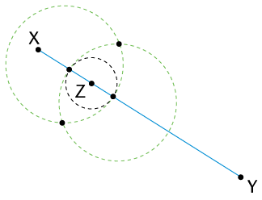
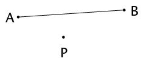
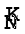
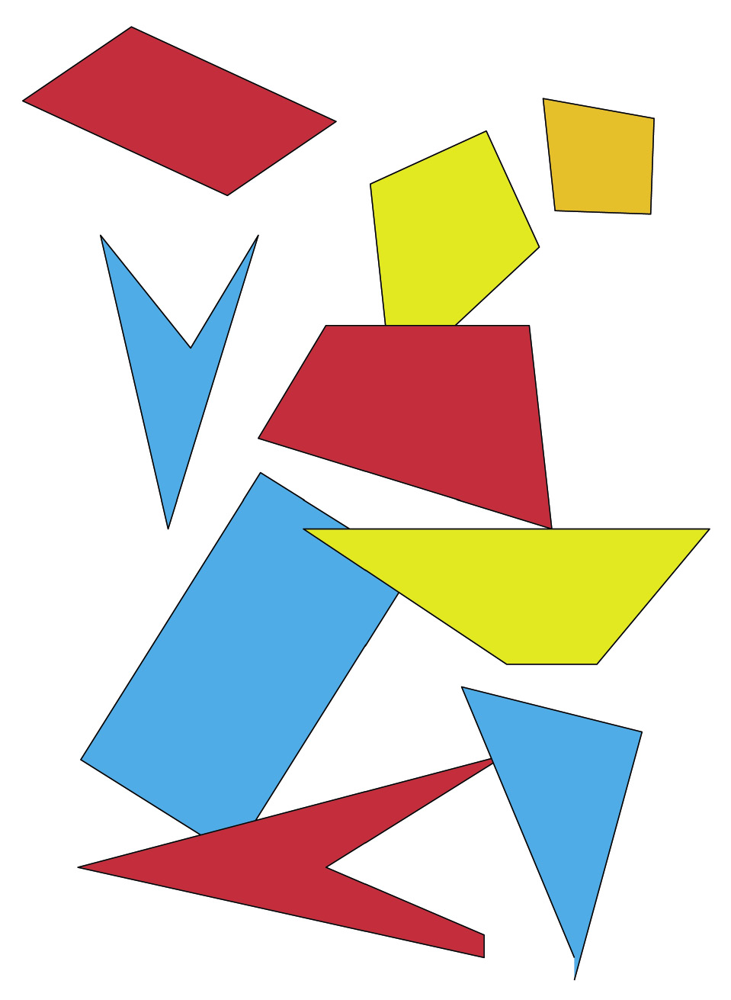
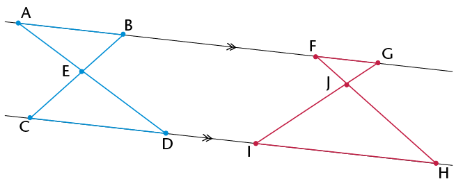
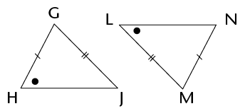
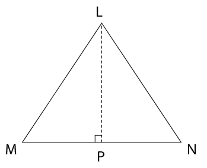
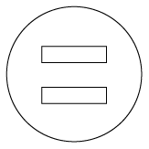
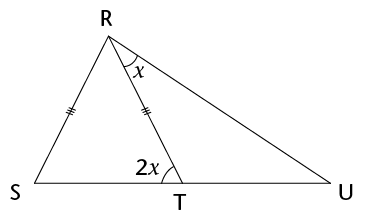

In hierdie hoofstuk sal jy die konstruksie van meetkundige figure, met slegs ’n passer en liniaal, hersien. Jy gaan die konstruksie van loodlyne, halveerlyne van hoeke asook spesiale hoeke hersien en verder ondersoek. Hierdie konstruksies help jou om meer konstruksies asook eienskappe van 2D-figure te verstaan. Jy sal ook die verbande tussen hoeke binne en buite ’n driehoek, sowel as kongruensie van driehoeke ondersoek. Laastens gaan jy meer uitvind oor die hoeklyne van vierhoeke en oor die binnehoeke van verskillende veelhoeke.
10.1 Konstruksie van loodlyne 177
10.2 Halvering van hoeke 180
10.3 Konstruksie van spesiale hoeke sonder ’n gradeboog 182
10.4 Halveerlyne van hoeke in driehoeke 184
10.5 Binne- en buitehoeke van driehoeke 185
10.6 Konstruksie van kongruente driehoeke 187
10.7 Hoeklyne van vierhoeke 192
10.8 Hoeke in veelhoeke 195

10 Konstruksie van meetkundige figure
10.1 Konstruksie van loodlyne
HERSIEN LOODLYNE
Jy het in Graad 8 oor loodlyne geleer.
1. Wat beteken dit as ons sê “twee lyne is loodreg op mekaar”?
Twee lyne is loodreg wanneer al vier hoeke by die snypunt regte hoeke is.
2. Gebruik jou gradeboog om die hoeke tussen die pare lyne te meet. Sê dan of die lyne loodreg op mekaar is of nie.
(a) (b)
Die hoeke is 103°, 77°, 103° en 77°.
Die hoeke is almal gelyk aan 90°.
Die lyne is nie loodreg op mekaar nie.
Die lyne is dus loodreg op mekaar.
ONDERSOEK LYNE WAT GEVORM WORD WANNEER SIRKELS MEKAAR SNY
1. Doen die volgende in jou oefeningboek:
(a) Gebruik jou passer en trek twee sirkels van verskillende groottes wat oorvleuel.
(b) Trek ’n lyn deur die punte waar die sirkels mekaar sny.
(c) Trek ’n lyn om die middelpunte van die sirkels met mekaar te verbind.

Stap (a) Stap (b) Stap (c)
(d) Gebruik jou gradeboog en meet die hoeke tussen die snylyne.
(e) Wat kan jy oor die snylyne sê?
As al die hoeke by die snypunt ewe groot is,
is hulle almal regte hoeke en die lyne is loodreg op mekaar.
2. Herhaal vraag 1(a) tot (e) met sirkels wat ewe groot is.
3. Watter afleiding kan jy maak oor ’n lyn wat deur die snypunte van twee oorvleuelende sirkels getrek word en ’n lyn wat deur hulle middelpunte getrek word?
Die twee lyne is loodreg op mekaar.
GEBRUIK SIRKELS OM LOODLYNE TE KONSTRUEER
Geval 1: ’n Loodlyn deur ’n punt wat nie op die lynstuk is nie
Lees die inligting en instruksies en doen die konstruksie in jou oefeningboek.
|
Lynstuk MN met punt P op ’n afstand daarvan af word vir jou gegee. Jy moet ’n lyn konstrueer wat loodreg op MN is, sodat die loodlyn deur punt P gaan.

|
Stap 1
Gebruik jou passer om ’n sirkel te trek waarvan die middelpunt die een eindpunt van die lynstuk (N) is en deur punt P gaan.
|
|
Stap 2
Herhaal stap 1, maar maak die ander
eindpunt van die lynstuk (M) die
middelpunt van jou sirkel.

|
Stap 3
Verbind die punte waar die sirkels sny:
PQ ⊥ MN

|
Geval 2: ’n Loodlyn by ’n punt wat op die lynstuk is
Lees die inligting en instruksies en doen die konstruksie in jou oefeningboek.
|
Lynstuk XY met punt Z daarop word vir jou gegee. Jy moet ’n loodlyn konstrueer wat deur Z gaan.

|
Stap 1
Gebruik jou passer om ’n sirkel met
middelpunt Z te trek. Maak sy radius kleiner as ZX. Let op die twee punte waar die sirkel XY sny.

|
|
Stap 2
Stel jou passer wyer as wat dit was vir die sirkel met middelpunt Z. Trek twee ewe groot sirkels met middelpunte by die twee punte waar die eerste (swart) sirkel XY sny. Die twee sirkels (groen) sal oorvleuel.

|
Stap 3
Verbind die snypunte van die twee
oorvleuelende sirkels. Merk hierdie punte C en D: CD ⊥ XY en gaan deur punt Z.

|
OEFEN OM SIRKELS TE GEBRUIK OM LOODLYNE TE KONSTRUEER
Trek in elk van die volgende twee gevalle ’n lyn wat loodreg op die lynstuk is en deur punt P gaan.
1.

2.


10.2 Halvering van hoeke
GEBRUIK SIRKELS OM HOEKE TE HALVEER
Werk deur die volgende voorbeeld waar twee
snydende sirkels gebruik word om ’n hoek te
halveer. Doen dan self die stappe in jou
oefeningboek.
Om ’n hoek te halveer beteken om dit in twee ewe groot hoeke te verdeel.
|
A C word vir jou gegee. Jy moet die hoek halveer. C word vir jou gegee. Jy moet die hoek halveer.

|
Stap 1
Trek ’n sirkel met middelpunt B om
sodoende gelyke lengtes op albei bene van die hoek af te merk. Merk die snypunte
D en E: DB = BE.

|
|
Stap 2
Trek twee ewe groot sirkels met
middelpunte by D en by E. Maak seker
die sirkels oorvleuel.

|
Stap 3
Trek ’n lyn van B af deur die punte waar die twee ewe groot sirkels sny. Hierdie lyn sal A C halveer. C halveer.

|

Dieselfde konstruksie as in stap 3 hier bo
Kan jy verduidelik waarom die metode hier bo werk om ’n hoek te halveer?
Kan jy ook sien dat ons nie volle sirkels hoef te teken nie, maar bloot dele van sirkels (boë) kan gebruik om die konstruksie hier bo te doen?
OEFEN OM HOEKE TE HALVEER
Halveer die hoeke hier onder sonder om ’n gradeboog te gebruik.
Nota: Laat die leerders verduidelik watter punt op die stelsel van drie ineensluitende sirkels ooreenkom met die hoekpunte van die hoeke. Laat hulle verduidelik hoe hulle
die middelpunte van die ineensluitende sirkels sal bepaal.
10.3 Konstruksie van spesiale hoeke sonder ’n gradeboog
Hoeke van 30°, 45°, 60° en 90° staan bekend as spesiale hoeke. Jy moet hierdie hoeke kan konstrueer sonder om ’n gradeboog te gebruik.
KONSTRUEER ’N HOEK VAN 45°
Jy het geleer hoe om ’n hoek van 90° te teken, en hoe
om ’n hoek te halveer, sonder om ’n gradeboog te gebruik. Gebruik hierdie inligting om ’n hoek van 45°
Wenk: Verleng die lynstuk na die linkerkant van X.
te teken by punt X op die lynstuk hier onder.

KONSTRUEER HOEKE VAN 60° EN 30°
1. Wat weet jy oor die sye en hoeke van ’n gelyksydige driehoek?
Al drie sye is ewe lank en al drie hoeke is gelyk aan 60°.
2. Trek twee sirkels met die volgende eienskappe in jou oefeningboek:
- • Die sirkels is ewe groot.
- • Elke sirkel gaan deur die ander sirkel se middelpunt.
- • Die sirkels se middelpunte is A en B gemerk.
- • Die snypunte van die sirkels is D en E gemerk.
Die tekening hier regs dien as ’n voorbeeld.
3. Trek die volgende lynstukke: AB, AD en DB.
4. Wat kan jy oor die lengtes van AB, AD en DB sê?
Almal is ewe lank, aangesien hulle radiusse van sirkel A is.
5. Watter soort driehoek is ABD?
6. Wat weet jy dus oor  ,
,  en
en  ?
?
7. Gebruik jou kennis van die halvering van hoeke om ’n hoek van 30° te konstrueer op die konstruksie wat jy in vraag 2 gemaak het.
8. Gebruik dit wat jy hier bo geleer het om ’n hoek van 60° by punt P op lynstuk PQ
hier onder te konstrueer.

KONSTRUEER HOEKE WAT VEELVOUDE VAN SPESIALE HOEKE IS
1. Voltooi die tabel. Die eerste blok is reeds vir jou ingevul.
|
|
|
|
|
|
30°
|
30°; 60°; 90°; 120°; 150°; 180°; 210°; 240°; 270°; 300°; 330°
|
45°
|
45°, 90°, 135°, 180°, 225°, 270°, 315°
|
|
60°
|
60°; 120°; 180°; 240°; 300°
|
90°
|
90°; 180°; 270°
|
2. Konstrueer die volgende hoeke in jou oefeningboek sonder om ’n gradeboog te gebruik. Jy sal elke keer meer as een konstruksie moet doen om die hoek te verkry.
(a) 120° (b) 135° (c) 270° (d) 240° (e) 150°
10.4 Halveerlyne van hoeke in driehoeke
In afdeling 10.2 het jy geleer hoe om ’n hoek te
halveer. Jy gaan nou die halveerlyne van hoeke in
’n driehoek ondersoek.
1. (a) Halveer elk van die hoeke van die skerphoekige driehoek hier onder.
(b) Verleng elk van die halveerlyne na die teenoorstaande sy van die driehoek.
(c) Wat sien jy raak?
Die drie halveerlyne van die hoeke sny mekaar in dieselfde punt.
2. (a) Doen dieselfde met die stomphoekige driehoek.
(b) Wat sien jy raak?
Die halveerlyne van die drie hoeke sny mekaar in dieselfde punt.

3. Vergelyk jou driehoeke met twee klasmaats s’n. Julle behoort dieselfde resultate
te hê.

|
|
Jy behoort te gevind het dat die drie halveerlyne van die hoeke van ’n driehoek in een punt sny. Hierdie punt is dieselfde afstand van elke sy van die driehoek af.
|
10.5 Binne- en buitehoeke van driehoeke
WAT IS BINNE- EN BUITEHOEKE?
|
|
’n Binnehoek is ’n hoek wat tussen twee sye van ’n driehoek lê. Dit is binne-in die driehoek. ’n Driehoek het drie binnehoeke.
’n Buitehoek is ’n hoek tussen ’n sy van ’n driehoek en ’n ander sy wat verleng word. Dit is buite die gegewe driehoek.
|
Kyk na ∆PQR. Sy drie sye is verleng om
drie buitehoeke te skep.
Elke buitehoek het een aangrensende
binnehoek (langsaan) en twee
teenoorstaande binnehoeke, soos in
die volgende tabel beskryf word.
|
|
|
|
|
1
|
x
|
z en y
|
|
2
|
y
|
x en z
|
|
3
|
z
|
x en y
|
IDENTIFISEER BUITEHOEKE EN TEENOORSTAANDE BINNEHOEKE
1. Benoem elke buitehoek en sy twee teenoorstaande binnehoeke hier onder.
(a) (b) (c)
|
|
4
|
9
|
6
|
10
|
11
|
|
|
1 en 2
|
5 en 7
|
5 en 8
|
11 en 12
12 & 13
en 14
|
13 en 14
|
2. Elke sy van ∆ABC hier onder is in albei rigtings verleng om ses buitehoeke te skep.

(a) Skryf die name van die binnehoeke van die driehoek neer.
A. Leerders kan die hoeke ook merk deur ’n 1 in die binne-
hoeke naby aan die A, B en C te skryf en dan na hoekerwys.
(b) Aangesien ’n driehoek drie sye het wat in albei rigtings verleng kan word, is daar
twee buitehoeke by elke hoekpunt. Skryf die name van al die buitehoeke neer.
M
(c) Verduidelik waarom M L nie ’n buitehoek van ∆ABC is nie.
L nie ’n buitehoek van ∆ABC is nie.
definisie nie: ’n buitehoek lê tussen ’n sy van die driehoek en ’n verlengde sy.
(d) Skryf twee ander hoeke neer wat nie binnehoeke of buitehoeke is nie.
G
ONDERSOEK DIE BUITE- EN BINNEHOEKE van ’N DRIEHOEK
1. Kyk na ∆LMN. Skryf die naam van die buitehoek neer.
M Q
Q
2. Gebruik ’n gradeboog om die
binnehoeke en die buitehoek te
meet. Skryf die afmetings op die
tekening neer.
3. Gebruik jou bevindings in vraag 2
om hierdie som te voltooi:
L N + M
N + M N =
N =
4. Wat is die verband tussen die
buitehoek van ’n driehoek en die
som van die teenoorstaande
binnehoeke?
|
|
Die buitehoek van ’n driehoek is gelyk aan die som van die teenoorstaande binnehoeke.
|
5. Bepaal die groottes van hoeke a tot f hier onder sonder om ’n gradeboog te gebruik. Gee redes vir die bewerings wat jy maak soos jy die antwoorde uitwerk.
(a) (b) (c)

d + f = 180° − 78° = 102°
d = f (∠e teenoor gelyke sye)

10.6 Konstruksie van kongruente driehoeke
Twee driehoeke is kongruent as hulle presies dieselfde vorm en grootte het: hulle kan presies bo-op mekaar pas. Dit beteken al drie ooreenkomstige sye en al drie ooreenkomstige hoeke is ewe groot, soos wat in die volgende twee pare gewys word.
∆ABC ≡ ∆DEF en ∆GHI ≡ ∆JKL. In elk van die pare van driehoeke is die ooreenstemmende hoeke en sye gelyk.
MINIMUM VOORWAARDES VIR KONGRUENSIE
Om te bepaal of twee driehoeke kongruent is, hoef ons nie te weet wat die afmetings van al drie sye en al drie hoeke is nie, maar ons het sekere minimum afmetings nodig. Jy gaan nou ondersoek instel oor watter stelle afmetings slegs een moontlike driehoek gee.
1. Gebruik ’n liniaal, passer en gradeboog om die volgende driehoeke te konstrueer. Minimum afmetings word elke keer gegee.
(a) As drie sye gegee word: sy, sy, sy (SSS):
∆DEF met DE = 7 cm, DF = 6 cm en EF = 5 cm.
(b) As drie hoeke gegee word: hoek, hoek, hoek (HHH):
∆ABC met = 80°,  = 60° en
= 60° en  = 40°.
= 40°.

(c) As een sy en twee hoeke gegee word: sy, hoek, hoek (SHH):
∆GHI met GH = 8 cm,  = 60° en
= 60° en  = 30°.
= 30°.

(d) As twee sye en ’n ingeslote hoek gegee word: sy, hoek, sy (SHS):
∆JKL met JK = 9 cm,  = 130° en KL = 7 cm.
= 130° en KL = 7 cm.

(e) As twee sye en ’n hoek wat nie ingesluit is nie gegee word: sy, sy, hoek (SSH):
Let daarop dat daar hier twee moontlikhede is.
∆MNP met MN = 10 cm,  = 50° en PN = 8 cm.
= 50° en PN = 8 cm.

(f) As ’n regte hoek, die skuinssy en ’n sy gegee word (90°SS):
∆TRS met TR ⊥ RS, RS = 7 cm en TS = 8 cm.

(g) Driehoek UVW met UV = 6 cm en VW = 4 cm.

2. Vergelyk jou driehoeke met drie klasmaats s’n. Watter van jou driehoeke is kongruent aan hulle s’n? Watter is nie kongruent nie?
Driehoeke (a), (c), (d) en (f) is kongruent.
Driehoeke (b), (e) en (g) is nie kongruent nie.
3. Kyk weer na ∆MNP (vraag 1(e)). Het jy en jou maats ook gesien dat twee verskillende driehoeke geteken kan word wat albei aan die gegewe afmetings voldoen? Een van die driehoeke is stomp en die ander skerp. Die stappe hier onder wys hoekom.
|
Stap 1
Konstrueer MN = 10 cm en die 50°-hoek by M, al weet jy nie wat die lengte van die onbekende sy (MP) is nie.

|
Stap 2
 is onbekend, maar NP = 8 cm. Konstrueer dus ’n boog 8 cm van N af. Elke punt op die boog is 8 cm van N af.

|
|
Stap 3
Punt P moet 8 cm van N af wees en op die
onbekende sy van die driehoek val. Die boog
sny die derde sy by twee punte, so P kan by
enige punt wees.
Twee driehoeke is dus moontlik en albei
voldoen aan die gegewe voorwaardes, d.w.s.
MN = 10 cm, NP = 8 cm en  = 50°. = 50°.
Laat die leerders die konstruksies doen.
|
4. Voltooi die tabel. Skryf neer of ons ’n kongruente driehoek kan konstrueer as die volgende voorwaardes gegee word.
|
|
|
|
3 sye (SSS)
|
Ja
|
|
2 sye (SS)
|
Nee
|
|
3 hoeke (HHH)
|
Nee
|
|
2 hoeke en ’n sy (HHS)
|
Ja
|
|
2 sye en ’n hoek nie tussen die sye nie (SSH)
|
Nee
|
|
2 sye en ’n hoek tussen die sye (SHS)
|
Ja
|
|
Reghoekig met die skuinssy en ’n sy (90°SS)
|
Ja
|
10.7 Hoeklyne van vierhoeke
TEKEN HOEKLYNE
’n Hoeklyn is ’n reguit lyn in ’n figuur wat twee hoekpunte van die figuur verbind, waar die hoekpunte nie langs mekaar is nie.
1. Kyk na die vierhoeke hier onder. Die twee hoeklyne van die vierkant is ingeteken:
AC en BD.
2. Teken die hoeklyne van die ander vierhoeke hier onder in.
Vierkant Reghoek Parallelogram

Ruit Vlieër Trapesium
3. Hoeveel sye het ’n vierhoek?
4. Hoeveel hoeke het ’n vierhoek?
5. Hoeveel hoeklyne het ’n vierhoek?
HOEKLYNE VAN ’N RUIT
Op die volgende bladsy is twee oorvleuelende sirkels met middelpunte A en B. Die sirkels is dieselfde grootte.
1. Konstrueer ’n ruit in die sirkels deur die middelpunt van elke sirkel met die snypunte van die sirkels te verbind. Verbind A en B.
2. Konstrueer die middelloodlyn van AB.
(Gaan terug na afdeling 10.1 as jy hulp nodig
het.) Wat merk jy op?
’n Middelloodlyn is ’n
lyn wat ’n ander lyn teen
’n regte hoek (90°) in die helfte sny.

3. Halveer die hoeklyne mekaar?
4. Voltooi die sin: Die hoeklyne van ’n ruit sal mekaar altyd
en mekaar ook halveer.
HOEKLYNE VAN ’N VLIEËR
Hier onder is twee oorvleuelende sirkels met middelpunte D en E. Die sirkels is verskillende groottes.
1. Konstrueer ’n vlieër deur die middelpunte van die sirkels met die snypunte van die sirkels te verbind.
2. Trek die hoeklyne van die vlieër in.
3. Merk al die lyne wat ewe lank is.
4. Is die hoeklyne van die vlieër loodreg?
5. Halveer die hoeklyne van die vlieër mekaar?
Nee, slegs een hoeklyn word gehalveer.
6. Wat is die verskil tussen die hoeklyne van ’n ruit en dié van ’n vlieër?
Die hoeklyne van ’n ruit halveer mekaar.
HOEKLYNE VAN PARALLELOGRAMME, REGHOEKE EN VIERKANTE
1. Gebruik die rooster om ’n parallelogram, reghoek en vierkant te teken.
2. Trek die hoeklyne van die vierhoeke hier bo in.
3. Dui op elke figuur al die lengtes van die halveerlyne aan wat ewe lank is. (Gebruik ’n
liniaal.)
4. Gebruik die inligting wat jy gekry het om die tabel te voltooi. Vul “ja” of “nee” in.
|
|
|
|
|
|
Parallelogram
|
Nee
|
Ja
|
Nee
|
|
Reghoek
|
Ja
|
Ja
|
Nee
|
|
Vierkant
|
Ja
|
Ja
|
Ja
|
10.8 Hoeke in veelhoeke
ONDERSOEK DIE SOM VAN DIE HOEKE IN VEELHOEKE M.B.V. HOEKLYNE
1. Ons kan ’n vierhoek in twee driehoeke verdeel deur een hoeklyn in te trek.
(a) Trek hoeklyne in om elk van die ander veelhoeke hier onder in so min driehoeke
as moontlik te verdeel.
(b) Skryf die getal driehoeke in elke veelhoek neer.
Vierhoek Vyfhoek Seshoek
|
|
2
|
3
|
4
|
|
|
2 × 180° = 360°
|
3 × 180° = 540°
|
4 × 180° = 720°
|
Sewehoek Agthoek Negehoek
2. Die som van die hoeke van een driehoek = 180°. ’n Vierhoek bestaan uit twee driehoeke, so die som van die hoeke in ’n vierhoek = 2 × 180° = 360°. Werk die som van die binnehoeke van elk van die ander veelhoeke hier bo uit.
Nota: Wees bedag daarop dat van die leerders dalk driehoeke sal wil teken wat die
middelpunt van die veelhoek as ’n hoekpunt deel. In daardie geval moet hulle 360°
(die middelpuntshoek) van die som van die hoeke van al die driehoeke aftrek.
1. Pas die woorde in die regterkolom by die definisies in die linkerkolom. Skryf die
letter van die definisie langs die bypassende woord neer.
|
(a) ’n Vierhoek met hoeklyne wat loodreg op mekaar is en wat mekaar halveer
|
Vlieër
|
|
(b) ’n Vierhoek met hoeklyne wat loodreg op mekaar is maar net een van die hoeklyne halveer die ander een
|
Kongruent
|
|
(c) ’n Vierhoek wat ewe lang hoeklyne het wat mekaar halveer
|
Buitehoek
|
|
(d) Figure wat presies dieselfde grootte en vorm het
|
Ruit
|
|
(e) In die helfte sny
|
Loodlyne
|
|
(f) ’n Hoek wat buite ’n geslote figuur gevorm word: dit is tussen
’n sy en ’n verlengde sy van die figuur
|
Halveer
|
|
(g) Lyne wat mekaar teen ’n hoek van 90° sny
|
Spesiale hoeke
|
|
(h) 90°, 45°, 30°, 60°
|
Reghoek
|
2. Voltooi die sin: Die buitehoek van ’n driehoek is gelyk aan
teenoorstaande twee binnehoeke.
3. (a) Konstrueer ∆PQR met hoeke van 30° en 60°. Die sy tussen die hoeke moet
8 cm wees. Jy mag net ’n liniaal en ’n passer gebruik.

(b) Sal alle driehoeke met dieselfde afmetings hier bo kongruent wees aan ∆PQR?
Verduidelik jou antwoord.
Ja, alle sye en hoeke van sulke driehoeke sal ewe groot wees. Die driehoeke mag
wel in verskillende posisies lê. Dit is omdat die derde hoek = 90° is.
Punt P kom in hierdie geval ooreen met die
middelpunt van die eerste sirkel wat vanaf punt P getrek word om die
middelpunte van die twee ewe groot ineensluitende sirkels te bepaal. Sentreer die passer by P en
konstrueer ’n sirkel wat lynstuk CD twee keer sny om die middelpunte te vind.
Jy het reeds geleer om tussen gelyksydige, gelykbenige en reghoekige driehoeke te onderskei, asook tussen die volgende vierhoeke: parallelogramme, reghoeke, vierkante, ruite, trapesiums en vlieërs. Jy het die eienskappe van hierdie figure, soos watter sye gelyk of ewewydig is, of watter hoeke gelyk is, ondersoek ten einde die figure te klassifiseer. In hierdie hoofstuk gaan jy jou kennis van die eienskappe van hierdie figure asook algemene eienskappe van driehoeke en vierhoeke gebruik om verdere inligting oor die figure uit te werk. Jy gaan ook meer oor kongruensie en gelykvormigheid van driehoeke leer.
11.1 Hersiening: Klassifikasie van driehoeke 199
11.2 Bepaling van onbekende hoeke in driehoeke 201
11.3 Vierhoeke 203
11.4 Kongruente driehoeke 207
11.5 Gelykvormige driehoeke 211
11.6 Verrykingsvrae 217

11 Meetkunde van 2D-figure
11.1 Hersiening: Klassifikasie van driehoeke
1. Gebruik ’n gradeboog om die binnehoeke van elk van die volgende driehoeke te meet. Skryf die groottes van die hoeke op die diagramme.

2. Klassifiseer die driehoeke in vraag 1 volgens hulle hoekeienskappe. Kies uit die volgende soorte driehoeke: skerphoekig, stomphoekig en reghoekig.
(a) ∆ABC is ’n
driehoek, want
alle binnehoeke is kleiner as 90°.
(b) ∆EDF is ’n
driehoek, want
(c) ∆GHI is ’n
driehoek, want
een van die binnehoeke is groter
3. Die gemerkte hoeke in elke driehoek hier onder is gelyk. Klassifiseer die driehoeke volgens die eienskappe van hulle hoeke en sye.
(a) ∆
is ’n skerphoekige gelykbenige driehoek, want
 =
= 
en
.
(b) ∆
is ’n reghoekige gelykbenige driehoek, want
 =
=
en
 = 90°
= 90°
.
(c) ∆
is ’n stomphoekige gelykbenige driehoek, want
 =
=
en
 > 90°
> 90°
.

4. Sê vir watter soort driehoek elke bewering waar is. As dit waar is vir alle driehoeke, skryf “Alle driehoeke”.
|
|
|
|
|
(a)
|
Twee sye van die driehoek is gelyk.
|
Gelykbenige
|
|
(b)
|
Een hoek van die driehoek is stomp.
|
Stomphoekige
|
|
(c)
|
Twee hoeke van die driehoek is gelyk.
|
Gelykbenige
|
|
(d)
|
Al drie hoeke van die driehoek is gelyk aan 60°.
|
Gelyksydige
|
|
(e)
|
Die grootte van ’n buitehoek is gelyk aan die som
van die teenoorstaande binnehoeke.
|
Alle driehoeke
|
|
(f)
|
Die langste sy van die driehoek is teenoor die
grootste hoek.
|
Alle driehoeke, behalwe gelyksydige driehoeke
|
|
(g)
|
Die som van die twee korter sye van die driehoek is groter as die lengte van die langste sy.
|
Alle driehoeke, behalwe gelyksydige driehoeke
|
|
(h)
|
Die kwadraat van die lengte van een sy is gelyk aan
die som van die kwadrate van die ander sye.
|
Reghoekige
|
|
(i)
|
Die kwadraat van die lengte van een sy is groter as die som van die kwadrate van die ander sye.
|
Stomphoekige
|
|
(j)
|
Die som van die binnehoeke van die driehoek
is 180°.
|
Alle driehoeke
|
11.2 Bepaling van onbekende hoeke in driehoeke
Wanneer jy in meetkunde die grootte van ’n onbekende hoek of lengte van ’n figuur moet bepaal, moet jy ’n rede gee vir elke bewering wat jy maak.
Voltooi die voorbeeld hier onder:
In ∆ABC, is AC = BC en  = 40°. Bepaal die grootte van
= 40°. Bepaal die grootte van
(word in die diagram as x gewys).
|
|
|
|
AC = BC
∴ = 
180° = 40° + x + x
180° − 40° = 2x
∴ x =
|
Gegee
Som ∠e ∆
|
BEPALING VAN ONBEKENDE LENGTES EN HOEKE
1. Bereken die groottes van die onbekende hoeke.

a = 49° (som ∠e ∆) b = 105° (som ∠e ∆)
c = 75° (buite∠ ∆ of ∠e op reg. lyn)
n str. line)
2. Bepaal die groottes van die onbekende hoeke en die lengte van MO.

d = 76° (gelykb. ∆) g = 51° (buite∠e ∆)
e = 28° (som ∠e ∆) h = 51° (gelykb. ∆ of ∠e op reg. lyn of som ∠e ∆)
f = 284° (∠e om ’n punt) z = 102° (∠e op reg. lyn of buite ∠e ∆)
MO = 8 m (MN = MO)
3. Bereken die groottes van y en x.

2y = 180° − (26° + 16°) 6x = 180°
y = 69° (som ∠e ∆) x = 30° (som ∠e ∆)
11.3 Vierhoeke
EIENSKAPPE VAN VIERHOEKE
1. Benoem die volgende vierhoeke. Merk in elke figuur die hoeke en sye wat gelyk is. Gebruik waar nodig jou liniaal en gradeboog om hoekgroottes en lengtes te meet.
2. Voltooi die volgende tabel:
|
|
|
|
|
|
|
|
|
|
|
Ten minste een paar teenoorstaande hoeke is gelyk.
|
ja
|
ja
|
ja
|
ja
|
ja
|
nee
|
|
Albei pare teenoorstaande hoeke is gelyk.
|
ja
|
ja
|
ja
|
ja
|
nee
|
nee
|
|
Ten minste een paar aangrensende hoeke is gelyk.
|
ja
|
nee
|
ja
|
nee
|
nee
|
nee
|
|
Al vier hoeke is gelyk.
|
ja
|
nee
|
ja
|
nee
|
nee
|
nee
|
|
Enige twee teenoorstaande sye is gelyk.
|
ja
|
ja
|
ja
|
ja
|
nee
|
nee
|
|
Twee aangrensende sye is gelyk, en die ander twee aangrensende sye is ook gelyk.
|
ja
|
ja
|
nee
|
nee
|
ja
|
nee
|
|
Al vier sye is gelyk.
|
ja
|
ja
|
nee
|
nee
|
nee
|
nee
|
|
Ten minste een paar teenoorstaande sye is ewewydig.
|
ja
|
ja
|
ja
|
ja
|
nee
|
ja
|
|
Enige twee teenoorstaande sye is ewewydig.
|
ja
|
ja
|
ja
|
ja
|
nee
|
nee
|
|
Die twee hoeklyne is loodreg.
|
ja
|
ja
|
nee
|
nee
|
ja
|
nee
|
|
Ten minste een hoeklyn halveer die ander een.
|
ja
|
ja
|
ja
|
ja
|
ja
|
nee
|
|
Die twee hoeklyne halveer mekaar.
|
ja
|
ja
|
ja
|
ja
|
nee
|
nee
|
|
Die twee hoeklyne is gelyk.
|
ja
|
nee
|
ja
|
nee
|
nee
|
nee
|
|
Ten minste een hoeklyn halveer ’n paar teenoorstaande hoeke.
|
ja
|
ja
|
nee
|
nee
|
ja
|
nee
|
|
Albei hoeklyne halveer ’n paar teenoorstaande hoeke.
|
ja
|
ja
|
nee
|
nee
|
nee
|
nee
|
|
Die som van die binnehoeke is 360°.
|
ja
|
ja
|
ja
|
ja
|
ja
|
ja
|
3. Kyk na die eienskappe van ’n vierkant en ’n ruit.
(a) Is al die eienskappe van ’n vierkant ook die eienskappe van ’n ruit? Verduidelik.
Nee. ’n Vierkant en ’n ruit deel die eienskap dat al vier sye gelyk is.
’n Vierkant het regte hoeke by die hoekpunte, maar ’n ruit het nie. ’n Ruit het
nie gelyke aangrensende hoeke by die hoekpunte nie. Die enigste eienskap wat
hoeke betref wat hulle deel, is dat die teenoorstaande hoeke gelyk is.
’n Vierkant het gelyke hoeklyne. ’n Ruit het nie.
(b) Is al die eienskappe van ’n ruit ook die eienskappe van ’n vierkant? Verduidelik.
Ja. Die eienskappe van ’n ruit word met ’n vierkant gedeel (sien vraag 2).
(c) Watter bewering is waar?
’n Vierkant is ’n spesiale soort ruit.
’n Ruit is ’n spesiale soort vierkant.
4. Kyk na die eienskappe van reghoeke en vierkante.
(a) Is al die eienskappe van ’n vierkant ook die eienskappe van ’n reghoek? Verduidelik.
Nee. ’n Reghoek het nie gelyke sye, hoeklyne wat teen 90° sny, of hoeklyne wat
die hoeke by die hoekpunte halveer nie.
(b) Is al die eienskappe van ’n reghoek ook die eienskappe van ’n vierkant? Verduidelik.
Ja. ’n Vierkant het al die eienskappe van ’n reghoek plus addisionele eienskappe.
(c) Watter bewering is waar?
’n Vierkant is ’n spesiale soort reghoek.
’n Reghoek is ’n spesiale soort vierkant.
5. Kyk na die eienskappe van parallelogramme en reghoeke.
(a) Is al die eienskappe van ’n parallelogram ook dié van ’n reghoek? Verduidelik.
Ja. ’n Reghoek het al die eienskappe van ’n parallelogram, en addisionele
eienskappe.
(b) Is al die eienskappe van ’n reghoek ook dié van ’n parallelogram? Verduidelik.
Nee. ’n Parallelogram het nie gelyke hoeklyne, of binnehoeke van 90° nie.
(c) Watter bewering is waar?
’n Reghoek is ’n spesiale parallelogram.
’n Parallelogram is ’n spesiale reghoek.
6. Kyk na die eienskappe van ’n ruit en ’n parallelogram. Is ’n ruit ’n spesiale soort parallelogram? Verduidelik.
Ja. ’n Ruit het al die eienskappe van ’n parallelogram plus addisionele eienskappe.
7. Vergelyk die eienskappe van ’n vlieër en ’n parallelogram. Waarom is ’n vlieër nie ’n spesiale soort parallelogram nie?
’n Vlieër het nie die volgende eienskappe, wat dit sou moes hê om ’n parallelogram
te wees, nie: teenoorstaande sye gelyk, albei pare teenoorstaande sye ewewydig en
albei hoeklyne wat mekaar halveer.
8. Vergelyk die eienskappe van ’n trapesium en ’n parallelogram. Waarom is ’n trapesium nie ’n spesiale soort parallelogram nie?
’n Trapesium het nie die volgende eienskappe, wat dit sou moes hê om ’n
parallelogram te wees nie: gelyke teenoorstaande sye, albei pare teenoorstaande sye
ewewydig en die hoeklyne wat mekaar halveer.
ONBEKENDE SYE EN HOEKE IN VIERHOEKE
1. Bepaal die groottes van hoeke a tot e in die vierhoeke. Gee redes vir jou antwoorde.

a = 90° (binnehoek van vierkant) d = 45° (teenoorst. ∠e ||m)
b = 45° (hoeklyne van vierkant) e = 135° (binne∠e vierh. = 360°)
c = 145° (binne∠e vierh. = 360°)
2. Bereken die omtrek van die
vierhoeke hier regs. Gee jou
antwoorde tot twee desimale
plekke.
AD =  cm (Pythagoras); CD =
cm (Pythagoras); CD =  cm (Pythagoras); Omtrek ABCD = 40,29 cm
cm (Pythagoras); Omtrek ABCD = 40,29 cm
FI =  eenhede; Omtrek van FIHG = 16,32 eenhede
eenhede; Omtrek van FIHG = 16,32 eenhede

11.4 Kongruente driehoeke
DEFINISIE EN NOTASIE VAN KONGRUENTE DRIEHOEKE
As twee driehoeke kongruent is, het hulle presies dieselfde grootte en vorm. As jy een van die driehoeke uitsny en dit bo-op die ander neersit, sal hulle presies op mekaar pas.
|
|
As twee driehoeke kongruent is, is elke sy in die een driehoek gelyk aan elke ooreenstemmende sy in die ander driehoek. Elke hoek in die een driehoek is ook gelyk aan elke ooreenstemmende hoek in die ander driehoek.
|

In die driehoeke hier bo kan jy sien dat ∆ABC ≡ ∆XYZ.
Kongruensiesimbool
≡ beteken “is kongruent aan”
Die volgorde waarin jy die letters skryf as jy sê dat
twee driehoeke kongruent is, is baie belangrik. Die
letters van die ooreenstemmende hoekpunte tussen die twee driehoeke moet in
dieselfde posisie in die notasie verskyn. Die notasie vir die driehoeke hier bo moet
byvoorbeeld ∆ABC ≡ ∆XYZ wees, want dit dui aan dat  =
=  , =
, =  ,
,  =
=  , AB = XY,
, AB = XY,
BC = YZ en AC = XZ.
Dit is verkeerd om ∆ABC ≡ ∆ZYX te skryf. Alhoewel die letters na dieselfde driehoeke verwys, dui hierdie notasie aan dat  = , =
= , =  , AB = ZY en BC = YX, en hierdie
, AB = ZY en BC = YX, en hierdie
bewerings is nie waar nie.
Skryf die gelyke hoeke en sye volgens die volgende driehoeke se notasies neer:
1. ∆KLM ≡ ∆PQR:
2. ∆FGH ≡ ∆CST:
MINIMUM VOORWAARDES VIR KONGRUENTE DRIEHOEKE
In die vorige hoofstuk het jy die minimum voorwaardes ondersoek waaraan twee (of meer) driehoeke moet voldoen sodat hulle as kongruent verklaar kan word.
|
|
Die voorwaardes vir kongruensie:
- • SSS (alle ooreenstemmende sye is gelyk)
- • SHS (twee ooreenstemmende sye en die ingeslote hoek is gelyk)
- • HHS (twee ooreenstemmende hoeke en enige ooreenstemmende sy is gelyk)
- • 90°SS (albei driehoeke het ’n 90°-hoek en het skuinssye gelyk en een ander sy gelyk).
|
Besluit of die driehoeke in elke paar hier onder kongruent is of nie. Skryf die notasie korrek vir elke kongruente paar en gee ’n rede vir kongruensie.
1. 2.
Nie noodwendig kongruent nie
3. 4.
Nie noodwendig kongruent nie
5. 6.
BEWYS DAT DRIEHOEKE KONGRUENT IS
Jy kan dit wat jy oor die minimum voorwaardes vir kongruensie weet gebruik om te bewys dat twee driehoeke kongruent is.
Wanneer jy ’n bewys vir kongruensie gee, onthou die volgende:
|
|
- • Elke bewering wat jy maak moet ’n rede hê.
- • Jy moet drie bewerings gee om te bewys dat enige twee driehoeke kongruent is.
- • Gee die rede vir kongruensie.
|
Voorbeeld:
In die skets aan die regterkant is AB // EC en AD = DC.
Bewys dat die driehoeke kongruent is.
Oplossing:
|
|
|
|
In ∆ABD en ∆CED:
1) AD = DC
2) A B = C B = C E E
3) B D = E D = E D D
∴ ∆ABD ≡ ∆CED
|
Gegee
Regoorst. ∠e
Verw. ∠e (AB // EC)
HHS
|
1. Bewys dat ∆ACE ≡ ∆BDE.
|

|
|
|
|
1) AC = B D D
2) AE = BE
3) CE = DE
∴ ∆ACE ≡ ∆BDE
|
Regoorst. ∠e
Gegee
Gegee
SHS
|
2. Bewys dat ∆WXZ ≡ ∆YXZ.
|

|
|
|
|
1) WZ = Y Z = 90° Z = 90°
2) XZ is gemeenskaplik
3) WZ = YZ
∴ ∆WXZ ≡ ∆YXZ
|
Gegee
Gegee
SS90°
|
3. Bewys dat QR = SP. (Wenk: Bewys eers dat die driehoeke kongruent is.)
|

|
|
|
|
1) PR = R P P
2) PR is gemeenskaplik
3) Q R = SP R = SP
∴ ∆PQR ≡ ∆RSP
∴ QR = SP
|
Gegee
Verw. ∠e (QP // RS)
HHS
|
4. Bewys dat die driehoeke hier onder kongruent is. Bepaal dan die grootte van Q P.
P.
|

|
|
|
|
1) QM = NM
2) MP is gemeenskaplik
3) QP = NP
∴ ∆PQM ≡ ∆PNM
∴ Q M = 41° M = 41°
QP = 180° − (83° + 41°)
= 56°
|
Gegee
Gegee
SSS
Som ∠e ∆
|

11.5 Gelykvormige driehoeke
EIENSKAPPE VAN GELYKVORMIGE DRIEHOEKE
∆BAC en ∆DEF is gelykvormig. Gelykvormige figure het dieselfde vorm, maar hulle groottes kan verskillend wees.

1. (a) Gebruik ’n gradeboog om die hoeke in elke driehoek hier bo te meet. Voltooi dan
die tabel hier onder.
|
|
|
|
|
 = 60° = 60°
|
 = 60° = 60°
|
|
|
 = 40° = 40°
|
 = 40° = 40°
|
|
|
 = 80° = 80°
|
 = 80° = 80°
|
|
(b) Wat kan jy oor die groottes van die hoeke in gelykvormige driehoeke sê?
Die ooreenstemmende hoeke in elke driehoek is gelyk.
2. (a) Gebruik ’n liniaal om die lengtes van die sye in elke driehoek in vraag 1 te meet.
Voltooi dan die tabel hier onder.
|
|
|
|
|
BA = 6 cm
|
DE = 8 cm
|
BA : DE = 6 : 8 = 1 : 1
|
|
BC = 3,9 cm
|
DF = 5,2 cm
|
BC : DF = 3,9 : 5,2 = 1 : 1
|
|
CA = 5,3 cm
|
FE = 7 cm
|
CA : FE = 5,25 : 7 = 1 : 1
|
(b) Wat kan jy oor die verband tussen die sye in
gelykvormige driehoeke sê?
Onthou: Jy lees ’n verhouding soos byvoorbeeld 2 : 1 as “twee tot een”.
Die ooreenstemmende sye is in dieselfde verhouding tot mekaar. In hierdie
geval is ∆DEF se sylengtes 1,3 keer so lank soos dié van ∆BAC.
3. Die volgende notasie wys dat die driehoeke gelykvormig is: ∆BAC /// ∆DEF. Waarom dink jy skryf ons die eerste driehoek as ∆BAC en nie as ∆ABC nie?
Die volgorde van die letters in die notasie van gelykvormige driehoeke dui aan
watter hoeke en sye ooreenstem. Die hoeke wat gelyk is, moet vir albei driehoeke in
dieselfde posisie wees. ∆BAC /// ∆DEF dui dus aan: , wat korrek is.
|
|
Die eienskappe van gelykvormige driehoeke:
- • Die ooreenstemmende hoeke is gelyk.
- • Die ooreenstemmende sye is in dieselfde verhouding tot mekaar.
|
Notasie vir gelykvormige driehoeke:
|
|
As ∆XYZ en ∆PQR gelykvormig is, skryf ons: ∆XYZ /// ∆PQR.
Soos vir die notasie van kongruente figure, dui die volgorde van die letters in die notasie van gelykvormige driehoeke aan watter hoeke en sye gelyk is.
Vir ∆XYZ /// ∆PQR:
Hoeke: = en  = en = en  = =
Sye: XY : PQ = XZ : PR = YZ : QR
As die driehoeke se hoekpunte in ’n ander volgorde geskryf word, sal die bewerings hier bo onwaar wees.
|
As jy bewys dat driehoeke gelykvormig is, moet jy óf bewys dat die ooreenstemmende hoeke gelyk is óf dat die sye in dieselfde verhouding tot mekaar is.
WERK MET EIENSKAPPE VAN GELYKVORMIGE DRIEHOEKE
1. Besluit of die pare driehoeke gelykvormig is.
(a) (b)
∆EFG /// ∆LMN (sye in dieselfde verhouding)
(c) (d)
Nie gelykvormig nie (sye nie in dieselfde verh. nie)
2. Doen die volgende taak in jou oefeningboek.
Konstrueer die driehoeke in (a) tot (d) met ’n liniaal en gradeboog. Gebruik jou kennis van gelykvormigheid om die tweede driehoek in elke vraag te teken. Dui die groottes van die ooreenstemmende sye en hoeke op die tweede driehoek aan.
(a) In ∆EFG, = 75°, EG = 4 cm en GF = 5 cm.
∆ABC is ’n vergroting van ∆EFG, met sy sye drie keer langer.
(b) In ∆MNO,  = 45°,
= 45°,  = 30° en MN = 5 cm.
= 30° en MN = 5 cm.
∆PQR is gelykvormig aan ∆MNO. Die sye van ∆MNO en die sye van ∆PQR is in
die verhouding 1 : 3.
(c) ∆RST is ’n gelykbenige driehoek.  = 40°, RS is 10 cm en RS = RT.
= 40°, RS is 10 cm en RS = RT.
∆VWX is gelykvormig aan ∆RST. Die sye van ∆RST en die sye van ∆VWX is in die
verhouding 1 : .
(d) ∆KLM is reghoekig by , LM is 7 cm en die skuinssy is 12 cm.
∆XYZ is gelykvormig aan ∆KLM en sy sye se lengtes is ’n derde van ∆KLM s’n.
|
ONDERSOEK: MINIMUM VOORWAARDES VIR GELYKVORMIGHEID
|
|
|
|
Watter van die volgende is minimum voorwaardes
vir gelykvormige driehoeke?
(a) Twee hoeke in een driehoek is gelyk aan
twee hoeke in ’n ander driehoek.
(b) Twee sye van een driehoek is in dieselfde
verhouding tot mekaar as twee sye in ’n ander
driehoek.
(c) Twee sye van een driehoek is in dieselfde
verhouding tot mekaar as twee sye van ’n
ander driehoek, en die ingeslote hoek is gelyk
aan die hoek tussen die ooreenstemmende
sye.
(d) Twee sye van een driehoek is in dieselfde
verhouding as twee sye van ’n ander driehoek,
en een hoek wat nie tussen die twee sye is nie,
is gelyk aan die ooreenstemmende hoek in die
ander driehoek.
(Dit werk slegs as die sy teenoor die gegewe
hoek die langer sy is.)
|
LOS PROBLEME MET GELYKVORMIGE DRIEHOEKE OP
1. Lynstuk QR is ewewydig aan lynstuk ST.
Ewewydige lyne sny mekaar
nooit nie. Twee lyne is ewewydig
aan mekaar as die afstand tussen hulle dieselfde langs die hele lengte van die lyne is.

Voltooi die volgende bewys dat ∆QRU /// ∆TSU:
|
|
|
|
R T = Q T = Q S S
Q S = S =
Q R = R =
∴ ∆QRU /// ∆TSU
|
Verw. ∠e
Regoorst. ∠e
Gelyke ∠e (of HHH)
|
2. Die volgende snydende lynstukke vorm driehoekpare tussen ewewydige lyne.

(a) Is die driehoeke in elke paar gelykvormig? Verduidelik.
Ja. Die hoeke is gelyk (dieselfde bewys as in vraag 1).
(b) Skryf pare gelykvormige driehoeke neer.
∆ABE /// ∆DCE; ∆FGJ /// ∆HIJ
(c) Is driehoeke soos dié altyd gelykvormig? Verduidelik hoe jy seker kan wees
sonder om elke moontlike driehoekpaar te meet.
Ja. As daar ewewydige lyne is, sal die pare verwisselende hoeke altyd gelyk wees.
Jy het dus gelykvormige driehoeke.
3. Hier regs vorm die snylyne pare van
driehoeke tussen lynstukke wat nie
ewewydig is nie. Is hierdie pare van
driehoeke gelykvormig? Verduidelik
waarom of waarom nie.
Hulle is nie gelykvormig nie.
Die ooreenstemmende hoeke in
elke driehoek is nie gelyk nie en die sye is nie in dieselfde verhouding nie.
4. Kyk na die driehoeke hier onder. DE // BC. Bewys dat ∆ABC /// ∆ADE.
|

|
|
|
|
 is gemeenskaplik is gemeenskaplik
AC = A E E
A B = A B = A D D
∴ ∆ABC /// ∆ADE
|
Ooreenk. ∠e (DE // BC)
Ooreenk. ∠e (DE // BC) of Som ∠e ∆
HHH
|
5. In die diagram hier regs is ST ’n
telefoonpaal en UV is ’n vertikale stok.
Die stok is 1 m hoog en dit gooi ’n
skaduwee van 1,7 m (VW). Die telefoonpaal
gooi ’n skaduwee van 5,1 m (TW).
Gebruik gelykvormige driehoeke om die
hoogte van die telefoonpaal te bereken.
In ∆STW en ∆UVW:
1)  is gemeenskaplik
is gemeenskaplik
2) S W = U
W = U W = 90° (konteks van probleem)
W = 90° (konteks van probleem)
3) T W = V
W = V W (som ∠e ∆)
W (som ∠e ∆)
∴ ∆STW /// ∆UVW (HHH)
∴ eweredigheid = 5,1 : 1,7 = 1 : 3
∴ ST = 3 × UV = 3 × 1 = 3 m
6. Hoeveel gelykvormige driehoeke is daar in die diagram? Verduidelik jou antwoord.
In ∆ABC en ∆ADB:
 is gemeenskaplik
is gemeenskaplik
 =
=  = 90° (gegee) ∴ ∆ABC /// ∆ADB
= 90° (gegee) ∴ ∆ABC /// ∆ADB
In ∆ABC /// ∆BDC:
 is gemeenskaplik
is gemeenskaplik
 =
=  = 90° (gegee) ∴ ∆ABC /// ∆BDC
= 90° (gegee) ∴ ∆ABC /// ∆BDC
∴ ∆ABC /// ∆ADB /// ∆BDC (AAA).

11.6 Verrykingsvrae
1. ∆ABC hier regs is gelyksydig. D is die middelpunt
van AB, E is die middelpunt van BC en F is die
middelpunt van AC.
(a) Bewys dat ∆BDE ’n gelyksydige driehoek is.
 = 60° (ABC is gelyksydig, gegee)
= 60° (ABC is gelyksydig, gegee)
BA = BC (ABC is gelyksydig, gegee)
∴ BD = BE (D en E is middelpunte)
B E = B
E = B D (gelykb. Δ)
D (gelykb. Δ)
∴ B E = B
E = B D = 60° (som ∠e ∆)
D = 60° (som ∠e ∆)
∴ ∆BDE is gelyksydig
(b) Bepaal al die kongruente driehoeke. Gee ’n bewys vir elkeen.
In ∆BDE en ∆ADF:
1) D E = F
E = F D = 60° (∆ABC is gelyksydig)
D = 60° (∆ABC is gelyksydig)
2) BD = AD (D is middelpunt, gegee)
3) BE = AF (E is middelpunt van BC; F is middelpunt van AC; ∆ABC gelyksydig
∴ BC = AC)
∴ ∆BDE ≡ ∆ADF (SHS) Net so is ∆BDE ≡ ∆CFE. Daarom is ∆ADF ≡ ∆CFE.
DE = EF = AF (∆BDE is gelyksydig, in 1(a) bewys)
∴ ∆BDE ≡ ∆DEF
∴ ∆BDE ≡ ∆DEF ≡ ∆ADF ≡ ∆CFE
(c) Noem soveel gelykvormige driehoeke as wat jy kan. Verduidelik hoe jy weet
hulle is gelykvormig.
∆ABC /// ∆BDE /// ∆DEF /// ∆ADF /// ∆CFE (Hulle is almal gelyksydig.)
(d) Wat is die verhouding van die ooreenstemmende sye van die gelykvormige
driehoeke tot mekaar?
Vir ∆ABC /// ∆BDE, is die sye in die verhouding 2 : 1 tot mekaar.
(e) Bewys dat DE ewewydig is aan AC.
B C = 60° (∆ABC is gelyksydig)
C = 60° (∆ABC is gelyksydig)
B E = 60° (∆BDE is gelyksydig)
E = 60° (∆BDE is gelyksydig)
DE = FC (B C = B
C = B E, ooreenk. ∠e)
E, ooreenk. ∠e)
(f) Is DF ewewydig aan BC? Is EF ewewydig aan BA? Verduidelik.
Ja. Soortgelyke rede as 1(d).
2. Kyk na die gelykvormige driehoeke hier onder wat geteken is deur konsentriese sirkels te gebruik. Verduidelik waarom die driehoeke in elke diagram gelykvormig is.
(a) (b)
(a) Die radiusse is gelyk, daarom is FJ = FL, FI = FK en FG = FH. Die sye van elke
driehoek is dus in dieselfde verhouding tot mekaar.  is gemeenskaplik in al drie
is gemeenskaplik in al drie
driehoeke gedeel. Die driehoeke is dus gelykvormig (SHS).
(b)  is gemeenskaplik aan elke driehoek. Elke driehoek het ’n 90°-hoek. Hulle is
is gemeenskaplik aan elke driehoek. Elke driehoek het ’n 90°-hoek. Hulle is
dus gelykvormig (HHH).
In Graad 8 het jy verbande tussen hoeke op reguit lyne geïdentifiseer. In hierdie hoofstuk sal jy al die verbande tussen hoeke hersien en duidelike beskrywings van hulle neerskryf.
12.1 Verbande tussen hoeke 221
12.2 Identifiseer en benoem hoeke 230
12.3 Los probleme op 232


12 Meetkunde van reguit lyne
12.1 Verbande tussen hoeke
Onthou dat 360° een volle rotasie is.
As jy na iets kyk en dan heeltemal in die rondte draai sodat jy weer daarna kyk, het jy deur ’n hoek van 360° gedraai. As jy net halfpad omdraai sodat jy na iets kyk wat agter jou rug was, het jy deur ’n hoek van 180° gedraai.
1. Beantwoord die vrae oor die figuur.

(a) Is F D kleiner of groter as ’n regte hoek?
D kleiner of groter as ’n regte hoek?
kleiner
(b) Is F E kleiner of groter as ’n regte hoek?
E kleiner of groter as ’n regte hoek?
groter
In die figuur hier bo is F D + hoek F
D + hoek F E = die helfte van ’n omwenteling = 180°.
E = die helfte van ’n omwenteling = 180°.
|
|
Die som van die hoeke op ’n reguit lyn is 180°.
Wanneer die som van hoeke 180° is, word die hoeke supplementêr genoem.
|
2. C A in die figuur hier regs is 75°.
A in die figuur hier regs is 75°.
AMB is ’n reguit lyn.

(a) Hoe groot is C B?
B?
(b) Waarom sê jy so?
C A + CB = AB = 180°
A + CB = AB = 180°
3. P B in die figuur in vraag 2 is 40°.
B in die figuur in vraag 2 is 40°.
Hoe groot is C P?
P?
Verduidelik jou redenasie.
C P + P
P + P
4. In die figuur hier onder is AMB ’n reguit lyn en A C en B
C en B C is ewe groot.
C is ewe groot.
(a) Hoe groot is hierdie hoeke?
(b) Hoe weet jy dit?
A C + BC vorm reguit lyn AMB.
C + BC vorm reguit lyn AMB.
As hulle ewe groot is, moet elke
hoek 90° wees.
(90° + 90° = 180°)
|
|
Wanneer een lyn twee gelyke hoeke vorm waar dit ’n ander lyn ontmoet, sê ons die twee lyne is loodreg op mekaar.
Omdat die twee gelyke hoeke hoeke op ’n reguit lyn is, is hul som 180°, dus is elke hoek 90°.
|
5. In die figuur hier onder sny die lyne AB en CD mekaar in punt M.

(a) Lyk dit asof C A en B
A en B D ewe groot is?
D ewe groot is?
In hierdie hoofstuk moet jy goeie redes gee vir elke
bewering wat jy maak.
(b) Kan jy verduidelik waarom hulle ewe groot is?
Ja, met die hoekdefinisie van ’n reguit lyn.
C A + C = 180°
A + C = 180°
As C B aan beide kante afgetrek word, volg dit dat
B aan beide kante afgetrek word, volg dit dat
(c) Waaraan is C A + D
A + D A gelyk?
A gelyk?
Waarom sê jy so?
Hulle is hoeke op reguit lyn CD.
(d) Wat is C A + C
A + C B?
B?
Waarom sê jy so?
Hulle is hoeke op reguit lyn AB.
(e) Is dit waar dat C A + D
A + D A = C
A = C A + C
A + C B?
B?
(f) Watter hoek kom aan albei kante van die vergelyking in (e) voor?
C A
A
6. Beskou jou antwoorde op vraag 5(c) tot 5(e) sorgvuldig.
Probeer nou jou waarneming in vraag 5(a) verduidelik.
Elke kant van die vergelyking het een hoek wat dieselfde grootte is, dus moet die
ander twee hoeke gelyk aan mekaar wees.
7. In die figuur hier onder sny AB en CD in M. Vier hoeke word gevorm. C B en A
B en A D word regoorstaande hoeke genoem. C
D word regoorstaande hoeke genoem. C A en B
A en B D is ook regoorstaande hoeke.
D is ook regoorstaande hoeke.
|
|
Wanneer twee reguit lyne sny, is die regoorstaande hoeke gelyk.
|

(a) As B C = 125°, hoe groot is A
C = 125°, hoe groot is A D?
D?
(b) Waarom sê jy so?
AD en B C is regoorstaande hoeke.
C is regoorstaande hoeke.
LYNE EN HOEKE
|
|
’n Lyn wat ander lyne sny, word ’n snylyn genoem.
|

In die patroon hier bo is AB ewewydig aan CD en EF // GH // KB // LD.
1. Hoeke a, b, c, d en e is ooreenkomstige hoeke. Lyk dit asof die ooreenkomstige hoeke ewe groot is?
Nee, party van die hoeke lyk groter of kleiner as ander.
2. Ondersoek of die ooreenkomstige hoeke ewe groot is deur natrekpapier te gebruik. Trek die hoek na wat jy met ander hoeke wil vergelyk en plaas dit bo-op die ander hoeke om uit te vind of hulle ewe groot is. Wat merk jy op?
Slegs d = e
3. Hoeke f, h, j, m en n is ook ooreenkomstige hoeke. Identifiseer al die ander groepe ooreenkomstige hoeke in die patroon.
(g, i, k); (o, r, t, v); (u, s, q, p)
4. Beskryf die posisie van ooreenkomstige hoeke wat gevorm word wanneer ’n snylyn ander lyne sny.
Hoeke aan dieselfde kant van die snylyn en óf almal links van die ander lyne óf aan
die regterkant van die ander lyne.
5. Die volgende is pare verwisselende hoeke: g en o; j en s; en k en r. Lyk dit asof hierdie hoeke ewe groot is?
Ja
6. Ondersoek of die verwisselende hoeke ewe groot is deur natrekpapier te gebruik.
Trek die hoek na wat jy wil vergelyk en plaas dit bo-op die ander hoek om uit te vind of hulle ewe groot is. Wat merk jy op?
Ja, hulle is ewe groot en hulle is hoeke op die lyne AB en CD wat ewewydig is aan
mekaar.
7. Identifiseer nog twee pare verwisselende hoeke.
m en u; h en q; f en p
8. Gee ’n duidelike beskrywing van die relatiewe posisie van verwisselende hoeke wat gevorm word wanneer ’n snylyn ander lyne sny.
Hulle is aan weerskante van die snylyn en tussen ewewydige lyne.
9. Het jy iets opgemerk omtrent party van die pare ooreenkomstige hoeke toe jy die ondersoek in vraag 6 gedoen het? Beskryf jou bevinding.
Ooreenkomstige hoeke is ook ewe groot wanneer AB ewewydig is aan CD.
10. Hoeke f en o; i en q; en k en s is almal pare ko-binnehoeke. Identifiseer nog drie pare ko-binnehoeke in die patroon.
g en p; j en r; m en t; v en h
|
|
Die hoeke in dieselfde relatiewe posisie by elke snyding
waar ’n reguit lyn twee ander lyne kruis, word ooreenkomstige hoeke genoem.
Hoeke aan verskillende kante van ’n snylyn en tussen twee ander lyne word verwisselende hoeke genoem.
Hoeke aan dieselfde kant van die snylyn en tussen twee ander lyne word ko-binnehoeke genoem.
|
HOEKE DEUR EWEWYDIGE LYNE GEVORM
Ooreenkomstige hoeke
Die lyne AB en CD hier onder ontmoet nooit nie. Jy weet reeds dat lyne wat nooit ontmoet nie en ’n vaste afstand van mekaar af is, ewewydige lyne genoem word. Ons skryf AB // CD.
|
|
Ewewydige lyne het dieselfde rigting, d.w.s. hulle vorm gelyke ooreenkomstige hoeke met enige lyn wat hulle sny.
|

Die lyn EF sny AB by G en CD by H.
EF is ’n snylyn wat ewewydige lyne AB en CD sny.
1. (a) Beskou E A en E
A en E C in die figuur hier bo sorgvuldig. Hulle word
C in die figuur hier bo sorgvuldig. Hulle word
ooreenkomstige hoeke genoem. Lyk dit asof hulle ewe groot is?
Ja
(b) Meet die twee hoeke om te kontroleer of hulle ewe groot is. Wat merk jy op?
Hulle is ewe groot.
2. Gestel E A en E
A en E C is regtig ewe groot. Sal E
C is regtig ewe groot. Sal E B en E
B en E D dan ook ewe groot wees?
D dan ook ewe groot wees?
Gee redes om jou antwoord te ondersteun.
Ja. Hulle is ooreenkomstige hoeke en ewe groot omdat AB // CD.
|
|
Wanneer twee ewewydige lyne deur ’n snylyn gesny word, is die ooreenkomstige hoeke ewe groot.
|
Verwisselende hoeke
B F en C
F en C E hier onder word verwisselende hoeke genoem. Hulle is aan teenoorgestelde kante van die snylyn.
E hier onder word verwisselende hoeke genoem. Hulle is aan teenoorgestelde kante van die snylyn.

3. Dink jy die hoeke A F en D
F en D E moet ook verwisselende hoeke genoem word?
E moet ook verwisselende hoeke genoem word?
Ja, hulle is aan verskillende kante van snylyn EF en tussen die lyne AB en CD.
4. Dink jy verwisselende hoeke is ewe groot? Ondersoek deur natrekpapier soos vroeër
te gebruik of meet die hoeke akkuraat met jou gradeboog.
Wat merk jy op?
Hulle is ewe groot as AB // CD.
|
|
Wanneer ewewydige lyne deur ’n snylyn gesny word, is die verwisselende hoeke ewe groot.
|
5. Probeer verduidelik waarom verwisselende hoeke gelyk is wanneer die lyne wat gesny word ewewydig is. Hou in gedagte dat ooreenkomstige hoeke ewe groot is.
’n Verwisselende hoek en ’n ooreenkomstige hoek is regoorstaande hoeke.
Regoorstaande hoeke is ewe groot.
Deur die volgende vrae te beantwoord behoort jy te kan sien hoe jy kan verduidelik waarom verwisselende hoeke gelyk is as ewewydige lyne deur ’n snylyn gesny word.
6. Is B H en D
H en D F in die figuur ooreenkomstige hoeke?
F in die figuur ooreenkomstige hoeke?
Wat weet jy van ooreenkomstige hoeke?
Hulle is in dieselfde posisie as lyne deur ’n snylyn gekruis word en hulle is ewe groot
as die lyne ewewydig is.

7. (a) Wat kan jy sê van B H + A
H + A H? Gee ’n rede.
H? Gee ’n rede.
Hulle is supplementêre hoeke (hul som is 180°), want AB is ’n reguit lyn.
(b) Wat kan jy sê van D G + C
G + C G? Gee ’n rede.
G? Gee ’n rede.
Hulle is supplementêre hoeke (hul som is 180°), want AB is ’n reguit lyn.
(c) Is dit waar dat B H + A
H + A H = D
H = D G + C
G + C G? Verduidelik.
G? Verduidelik.
Ja want die somme aan weerskante van die gelykaanteken is albei gelyk aan 180°.
(d) Sal die vergelyking in (c) steeds waar wees as jy B H aan die linkerkant met
H aan die linkerkant met
C G vervang?
G vervang?
Ja want C G en DH
G en DH
is ooreenkomstige hoeke en gelyk, want AB en CD is ewewydig (sien vraag 6).
8. Beskou jou werk in vraag 7 sorgvuldig en skryf ’n verduideliking van waarom verwisselende hoeke gelyk is wanneer twee ewewydige lyne deur ’n snylyn gesny word.
Ooreenkomstige hoeke is ewe groot as ewewydige lyne deur ’n snylyn gesny word.
Verwisselende hoeke sal ook ewe groot wees, omdat hul regoorstaande hoeke ewe
groot is.
Ko-binnehoeke
Die hoeke A H en C
H en C G in die figuur hier onder
G in die figuur hier onder
word ko-binnehoeke genoem. Hulle is aan
dieselfde kant van die snylyn.

9. (a) Wat weet jy van C G + D
G + D G? Verduidelik.
G? Verduidelik.
Hulle is supplementêr (hul som = 180°) want CD is ’n reguit lyn.
(b) Wat weet jy van B H + A
H + A H? Verduidelik.
H? Verduidelik.
Hulle is supplementêr (hul som = 180°) want AB is ’n reguit lyn.
(c) Wat weet jy van B H + C
H + C G? Verduidelik.
G? Verduidelik.
Hulle is verwisselende hoeke en gelyk, want AB // CD.
(d) Watter gevolgtrekking kan jy maak oor A H + C
H + C G? Gee gedetailleerde redes
G? Gee gedetailleerde redes
vir jou gevolgtrekking.
Hulle is ook supplementêr (hul som = 180°). Dit is omdat ons reeds getoon
het dat:
C G gelyk is aaverwisselende hoeke AB // CD)
G gelyk is aaverwisselende hoeke AB // CD)
B H en A supplementêr is (hoeke op ’n reguit lyn).
H en A supplementêr is (hoeke op ’n reguit lyn).
|
|
Wanneer twee ewewydige lyne deur ’n snylyn gesny word, is die som van twee ko-binnehoeke 180°.
’n Ander manier om dit te sê, is dat die twee
ko-binnehoeke supplementêr is.
|
12.2 Identifiseer en benoem hoeke
1. In die figuur hier onder is die lyn RF loodreg op AB.

(a) Is RF ook loodreg op CD? Regverdig jou antwoord.
Nee – nie noodwendig nie, want ons weet nie of AB // CD nie.
(b) Noem vier pare supplementêre hoeke in die figuur. Sê in elke geval hoe jy weet
dat die hoeke supplementêr is.
Daar is baie moontlikhede: RB e (op
reguit lyn AB); A E en E (op reguit lyn EF).
E en E (op reguit lyn EF).
Ko-binnehoeke C G, P en D
G, P en D
(slegs as AB // CD)
(c) Noem vier pare ko-binnehoeke in die figuur.
Ko-binnehoeke A H e
H e
(d) Noem vier pare ooreenkomstige hoeke in die figuur.
E P en (daar is ook vier ander
P en (daar is ook vier ander
moontlikhede)
(e) Noem vier pare verwisselende hoeke in die figuur.
A H en Q
H en Q
(Let daarop dat leerders ook verwisselende buitehoeke in die figuur kan lys.)
2. Daar word nou vir jou gegee dat AB en CD in die figuur hier onder ewewydig is.

(a) Indien dit gegee word dat RF loodreg op AB is, sal RF ook loodreg wees op CD?
Regverdig jou antwoord.
Ja. RF sal loodreg op CD wees, ws ooreenkomstig en dus sal
k 90° wees.
(b) Noem al die pare supplementêre hoeke in die figuur. Sê in elke geval hoe jy weet
dat die hoeke supplementêr is.
Omdat gegee word dat AB // CD, sal die ko-binnehoeke supplementêr wees:
P H en G
H en G Q;
Q;
Ander hoeke wat supplementêr is, is aangrensende hoeke op ’n reguit lyn:
C F en yn RF; ens.
F en yn RF; ens.
(c) Gestel EA = x. Gee die grootte van soveel hoeke in die figuur as wat jy kan in
terme van x. Gee elke keer ’n rede vir jou antwoord.
G C = x (regoorst. ∠e);
C = x (regoorst. ∠e);
Q F = Gupplementêr aangrensend,
F = Gupplementêr aangrensend,
of ∠e op reguit lyn) = 180° − x; A H 180° − x (regoorstaande ∠e);
H 180° − x (regoorstaande ∠e);
G Q = E180° − x
Q = E180° − x
(regoorstaande ∠e); Q H = 90° 90°; som van ∠e van driehoek).
H = 90° 90°; som van ∠e van driehoek).
(Ander geldige redes kan op verskeie plekke gegee word, bv. verwisselende
hoeke wat gelyk is, ens.)
12.3 Los probleme op
1. Lynstukke AB en CD in die figuur hier onder is
ewewydig. EF en IJ is ook ewewydig. Merk hierdie
feite op die figuur en beantwoord dan die vrae.
Wanneer jy probleme in meetkunde oplos, kan jy ’n snelskrifmanier gebruik om jou redes te skryf. As twee hoeke byvoorbeeld ewe groot is omdat hulle ooreenkomstige hoeke is, kan jy (ooreenk. ∠e, AB // CD) as die rede skryf.
(a) Noem vyf hoeke in die figuur wat gelyk is aan G D. Gee ’n rede vir elkeen van
D. Gee ’n rede vir elkeen van
jou antwoorde.
C (regoorst. ∠e) ;
(ooreenk. ∠e, EF // IJ);
(verw. ∠e, AB // CD);
E(ooreenk. ∠e, AB // CD)(verw. ∠e, EF // IJ)
(b) Noem al die hoeke in die figuur wat gelyk is aan A H. Gee ’n rede vir elkeen van
H. Gee ’n rede vir elkeen van
jou antwoorde.
Aooreenk. ∠e, EF // IJ);
Eegoorst. ∠e);
Ibo bewys);
CH (verw. ∠e, AB // CD)
2. AB en CD in die figuur hier onder is ewewydig. EF en IJ is ook ewewydig.
N B = 80° en JF = 40°.
B = 80° en JF = 40°.
Bepaal die grootte van soveel hoeke in die figuur as wat jy kan en gee redes.
Leerders behoort al 23 hoeke te kan bepaal uit die inligting wat verskaf word:
80° (regoorstaande ∠e)
N° (hoeke op reguit lyne AB en NF)
° (AB // CD, ooreenkomstige hoeke ewe groot)
M100° (hoeke op reguit lyn CD)
Hoorstaande ∠e)
M100° – 40° = 60°
(regoorstaande ∠e)
egoorstaande ∠e)
E (regoorstaande ∠e)
60° (∠e op reguit lyn AB)
= 60° (∠e op reguit lyn CD)
C(regoorstaande ∠e)
∴ Hsom van ∠e van driehoek)
∴ H = 40° want dis verwisselende ∠e)
3. In die figuur hier onder is AB // CD; EF // AB; JR // GH. P N = 60° en R
N = 60° en R D = 50°.
D = 50°.

(a) Bepaal die grootte van soveel hoeke in die figuur as wat jy kan en gee redes.
= 500° (∠e op rt. lyn);
= 50°
(regoorst.); 130°eenk. ∠e, EF // AB);
= 130° (∠e op rt. l 130° (∠e op rt. lyn);
= 130° (ko-binn
(regoorst. ∠e 50°nk. ∠e, EF // AB);
= 50° (∠e op rt. ly° (∠e op rt. lyn);
50° (ko-binne∠ meO = 130°
(∠e op rt. lyn); C = 130° = = 60° (ooreenk. ∠e,
EF //AB en AB //CD 120° (∠e op rt. ly20° (ooreenk. ∠e,
EF // AB en AB // CD); = 60° =egoorst. ∠e);
0° = 0° (∠e op r 120° − 50° = 70°;
= 70°
(regoorst. ∠e); orst. ∠e)
(b) Is EF en CD ewewydig? Gee redes vir jou antwoord.
Ja, ooreenkomstige hoeke ewe groot.
As AB // CD en AB // EF, dan volg dit ook dat EF // CD.
In hierdie hoofstuk gaan jy hersien wat jy in Graad 8 oor die stelling van Pythagoras
geleer het. Jy gaan ondersoek hoe die stelling bewys word, wat dit beteken, en hoe om dit toe te pas om onbekende lengtes in reghoekige driehoeke en ander meetkundige figure uit te werk.
13.1 Ondersoek die sye van ’n reghoekige driehoek 237
13.2 Toets vir reghoekige driehoeke 239
13.3 Bepaal onbekende sye 241
13.4 Nog oefeninge met Pythagoras se stelling 246

13 Die stelling van Pythagoras
13.1 Ondersoek die sye van ’n reghoekige driehoek
’n Stelling is ’n reël of ’n bewering wat deur
redenering bewys is. Die stelling van Pythagoras
is ’n reël wat net op reghoekige driehoeke van toepassing is. Die stelling is na die Griekse
wiskundige Pythagoras vernoem.
’n Reghoekige driehoek het een 90°-hoek.
Die langste sy van die reghoekige driehoek word
die skuinssy genoem.
Pythagoras (569–475 v.C.)
Pythagoras was ’n invloedryke
wiskundige. Soos baie Griekse
wiskundiges van 2 500 jaar gelede, was hy ook ’n filosoof en ’n
wetenskaplike. Hy het die baie bekende stelling, wat vandag as Pythagoras se stelling bekendstaan, geformuleer. Die stelling was egter al 1 000 jaar vroeër deur die Chinese en die Babiloniërs gebruik.

|
|
Die skuinssy is die sy teenoor die 90°-hoek in ’n reghoekige driehoek. Dit is altyd die langste sy.
|
ONDERSOEK KWADRATE OP DIE SYE VAN REGHOEKIGE DRIEHOEKE
1. Die figuur wys ’n reghoekige driehoek met
vierkante op elk van die sye.
(a) Bereken die oppervlaktes:
Vierkant A:
5 × 5 = 25 vierkante eenhede
Vierkant B:
3 × 3 = 9 vierkante eenhede
Vierkant C:
4 × 4 = 16 vierkante eenhede
(b) Tel die oppervlakte van vierkant B en die
oppervlakte van vierkant C bymekaar:
9 + 16 = 25 vierkante eenhede
(c) Wat merk jy op oor die oppervlaktes?
Oppervlakte van vierkant B + Oppervlakte van vierkant C
= Oppervlakte van vierkant A
2. Die figuur hier onder is soortgelyk aan die een in vraag 1. Die lengtes van die reghoeksye van die reghoekige driehoek is 5 cm en 12 cm.
(a) Tel die vierkante. Wat is die lengte van die skuinssy?
13 cm
(b) Bepaal die volgende:
Oppervlakte van A:
13 × 13 = 169 cm2
Oppervlakte van B:
5 × 5 = 25 cm2
Oppervlakte van C:
12 × 12 = 144 cm2
Oppervlakte van B + Oppervlakte van C:
25 + 144 = 169 cm2
(c) Wat merk jy op oor die oppervlaktes? Is dit soortgelyk aan jou antwoord in 1(c)?
Die som van die oppervlaktes van die twee vierkante wat op die reghoeksye van
die reghoekige driehoek gevorm word, is gelyk aan die oppervlakte van die
vierkant wat op die skuinssy gevorm word. Ja, dit is soortgelyk aan die antwoord
in 1(c).
3. Die lengtes van die reghoeksye van ’n reghoekige
driehoek is 8 cm en 15 cm. Gebruik jou bevindings in
die vorige vrae om die volgende vrae te beantwoord.
(a) Wat is die oppervlakte van die vierkant wat
langs die skuinssy geteken is?
15 cm × 15 cm = 225 cm2
8 cm × 8 cm = 64 cm2
Oppervlakte van vierkant langs skuinssy = 225 cm2 + 64 cm2
= 289 cm2
(b) Wat is die lengte van die driehoek se skuinssy?
Lengte van skuinssy =
= 17 cm
Dit wat jy in die aktiwiteit op die vorige twee bladsye opgemerk het, is waaroor die stelling van Pythagoras vir reghoekige driehoeke handel.
|
|
Die stelling van Pythagoras sê:
In ’n reghoekige driehoek is die oppervlakte van die vierkant op die skuinssy gelyk aan die som van die oppervlaktes van die vierkante op die reghoeksye van die driehoek. Dus:
(Skuinssy)2 = (Sy 1)2 + (Sy 2)2
|

13.2 Toets vir reghoekige driehoeke
Die stelling van Pythagoras kan op twee maniere aangewend word:
- • As ’n driehoek reghoekig is, is die verband tussen die sye soos volg:
(Skuinssy)2 = (Sy 1)2 + (Sy 2)2
- • As die verband (Langste sy)2 = (Sy 1)2 + (Sy 2)2 tussen die sye bepaal kan word, dan is die driehoek ’n reghoekige driehoek.
Ons kan dus toets of enige driehoek reghoekig is sonder om ’n gradeboog te gebruik.
Voorbeeld:
Is ’n driehoek met sye 12 cm, 16 cm en 20 cm reghoekig?

(Langste sy)2 = 202 = 400 cm2
(Sy 1)2 + (Sy 2)2 = 122 + 162 = 144 + 256 = 400 cm2
(Langste sy)2 = (Sy 1)2 + (Sy 2)2
∴ Die driehoek is reghoekig.
IS HIERDIE DRIEHOEKE REGHOEKIG?
1. Hierdie driehoek se sylengtes is 29 mm, 20 mm en 21 mm.
(a) Bewys dat dit ’n reghoekige driehoek is.
(Langste sy)2 = 292 = 841 mm2
(Sy 1)2 + (Sy 2)2 = 202 + 212
400 + 441 = 841 mm2 ∴ Die driehoek is reghoekig.
(b) Merk die regte hoek op die tekening.
2. Gebruik die stelling van Pythagoras om te bepaal of hierdie driehoeke reghoekig is. Alle waardes is in dieselfde eenhede.
(a) (b) (c)

42 + 122 = 16 + 144 = 160
3. Bepaal of die volgende sylengtes reghoekige driehoeke sal vorm. Alle waardes is in dieselfde eenhede.
(a) 7, 9 en 12 (b) 7, 12 en 14 (c) 16, 8 en 10
(d) 6, 8 en 10 (e) 8, 15 en 17 (f) 16, 21 en 25
13.3 Bepaal onbekende sye
Jy kan die stelling van Pythagoras gebruik om die ontbrekende lengtes van sye te bepaal as jy weet dat ’n driehoek reghoekig is.
BEPAAL DIE ONBEKENDE SKUINSSY
Voorbeeld:
Bereken die lengte van die skuinssy as die lengtes van die ander twee sye 6 eenhede en
8 eenhede is.
∆ABC is reghoekig, so:
AC2 = AB2 + BC2
= (62 + 82) eenhede2
= 36 + 64 eenhede2
= 100 eenhede2
AC =  eenhede
eenhede
= 10 eenhede
Soms is die vierkantswortel van ’n getal nie ’n
heelgetal of ’n eenvoudige breuk nie. In hierdie
gevalle kan jy die antwoord onder die
vierkantswortelteken los. Hierdie vorm van die
getal word ’n wortelvorm genoem.
Wortelvorm
 is ’n voorbeeld van ’n getal in wortelvorm.
is ’n voorbeeld van ’n getal in wortelvorm.
 is nie ’n wortelvorm nie, want jy kan dit vereenvoudig:
is nie ’n wortelvorm nie, want jy kan dit vereenvoudig:
 = 3
= 3
Voorbeeld:
Bereken die lengte van die skuinssy van
∆ABC as  = 90°, AB = 2 eenhede en BC = 5 eenhede.
= 90°, AB = 2 eenhede en BC = 5 eenhede.
Los jou antwoord in wortelvorm, waar van toepassing. Wanneer jy die vierkantswortels bereken, onthou dat lengte altyd positief is.
AC2 = AB2 + BC2
= 22 + 52 eenhede2
= 4 + 25 eenhede2
= 29 eenhede2
AC =  eenhede
eenhede
1. Bepaal die lengte van die skuinssy in elk van die driehoeke hier onder. Laat die antwoorde in wortelvorm waar van toepassing.
(a) (b)

NO2 = 552 + 482 = 3 025 + 2 304
KM =  cm = 10 cm
cm = 10 cm
(c) (d)

XZ2 = 72 + 122 = 49 + 144
XZ =  eenhede
eenhede
2. ’n Reghoek het sye met lengtes 36 mm en 77 mm.
Bepaal die lengte van die reghoek se hoeklyn.
772 + 362 = 5 929 + 1 296
= 7 225 mm2
Hoeklyn = m = 85 mm
3. ∆ABC het  = 90°, AB = 3 cm en AC = 5 cm.
= 90°, AB = 3 cm en AC = 5 cm.
Maak ’n ruwe skets van die driehoek en
bereken dan die lengte van BC.
BC2 = AC2 + AB2 = 32 + 52
= 9 + 25 = 34 cm2
BC = cm
4. ’n Reghoekige prisma is van glas gemaak. Dit het ’n lengte van 16 cm, ’n hoogte van 10 cm en ’n breedte van 8 cm. ABCD en EFGH is twee van die vlakke. ∆ACH is in die prisma geteken. Is ∆ACH reghoekig? Beantwoord die vrae om uit te vind.

(a) Bereken die lengte van die sye van ∆ACH. Let op dat al drie sye van die driehoek
hoeklyne van reghoeke is. AC is in reghoek ABCD, AH is in ADHE en HC is in
HDCG.
HC2 = HG2 + CG2 = 162 + 82 = 256 + 64 = 320 cm2 ∴ m
AH2 = DH2 + AD2 = 82 + 102 = 64 + 100 = 164 cm2 ∴
AC2 = AB2 + BC2 = 162 + 102 = 356 cm2 ∴ Am
(b) Is ∆ACH reghoekig? Verduidelik jou antwoord.
320 cm2 + 164 cm2 = 484 cm2
Nee, dit is nie ’n reghoekige driehoek nie.
BEPAAL ENIGE ONBEKENDE SY IN ’N REGHOEKIGE DRIEHOEK
Voorbeeld:
Bepaal die lengte van TS in die driehoek hier onder.
US2 = TU2 + TS2
102 = 82 + TS2
100 = 64 + TS2
36 = TS2
 = TS
= TS
∴ TS = 6 cm
1. Bereken in die reghoekige driehoeke hier onder die lengte van die sye wat nie gegee is nie. Los jou antwoorde in wortelvorm waar van toepassing.
(a) (b) (c)
y = 
z =  = 10
= 10
2. Bereken die lengte van die derde sy van die volgende reghoekige driehoeke. Teken eers ’n ruwe skets van elk van die driehoeke voor jy enige berekeninge doen. Rond jou antwoorde tot twee desimale plekke af.
(a) ∆ABC het AB = 12 cm, BC = 18 cm en  = 90°. Bereken AC.
= 90°. Bereken AC.
AC2 = 182 – 122
= 324 − 144
= 180 cm2
AC =cm ≈ 13,42 cm
(b) ∆DEF het = 90°, DE = 58 cm en DF = 41 cm. Bereken EF.
EF2 = DE2 – DF2
= 582 – 412
= 1 683 cm2
EF = m ≈ 41,02 cm
(c) ∆JKL het  = 90°, JK = 119 m, KL = 167 m. Bereken JL.
= 90°, JK = 119 m, KL = 167 m. Bereken JL.
JL2 = 1192 + 1672
= 14 161 + 27 889
= 42 050 m2
JL = m ≈ 205,06 m
(d) ∆PQR het PQ = 2 cm, QR = 8 cm en  = 90°. Bereken PR.
= 90°. Bereken PR.
PR2 = 22 + 82
= 4 + 64
= 68 cm2
PR ≈ 8,25 cm
3. (a) ’n Leer wat 5 m lank is word teen ’n muur gesit. Die onderkant
van die leer is 1 m van die muur af weg. Hoe ver teen die muur op
sal die leer reik? Rond jou antwoord tot twee desimale plekke af.
Hoogte teen muur = h
h2 = 52 − 12 h =m
= 25 – 1 ≈ 4,90 m
= 24 m2 Die leer reik 4,9 m teen die muur op.
(b) As die leer 4,5 m hoog teen die muur opreik, hoe ver van die muur
af is dit neergesit? Rond jou antwoord tot twee desimale plekke af.
Afstand vanaf muur = d 52 = 4,52 + d 2 d =
25 = 20,25 + d 2 ≈ 2,18 m
4,75 m2 = d 2

|
PYTHAGORIAANSE DRIETALLE
|
|
|
|
Stelle natuurlike getalle wat as die sye van ’n reghoekige driehoek gebruik kan word staan
as Pythagoriaanse drietalle bekend, byvoorbeeld:
3-4-5 5-12-13 7-24-25 16-30-34 20-21-29
Jy kan hierdie drietalle uitbrei deur veelvoude van hulle te bepaal. Drietalle uit die 3-4-5 stel sluit byvoorbeeld die volgende in:
3-4-5 6-8-10 9-12-15 12-16-20
Daar bestaan baie ou geskrifte waarin Pythagoriaanse drietalle opgeteken is. Die Babiloniërs het tussen 1900 en 1600 v.C. reeds baie groot Pythagoriaanse drietalle bereken, soos byvoorbeeld
1 679-2 400-2 929.
Hoeveel Pythagoriaanse drietalle kan jy bepaal? Wat is die grootste een wat jy kan bepaal wat nie ’n veelvoud van ’n ander een is nie?
|
13.4 Nog oefeninge met Pythagoras se stelling
1. Vier lyne is op die rooster getrek. Elke vierkant is een eenheid lank. Bereken die lengtes van die lyne: AB, CD, EF en GH. Doen die berekeninge in jou oefeningboek en vul die antwoorde hier onder in. Los jou antwoorde in wortelvorm.

AB =
eenhede CD =
eenhede EF =
eenhede GH =
eenhede
2. (a) Bereken die oppervlakte van reghoek KLMN.
6 cm × 4,5 cm = 27 cm2
(b) Bereken die omtrek van ∆KLM.
KM2 = 62 + 4,52 = 36 + 20,25 = 56,25
K,5 cm Omtrek: 6 + 4,5 + 7,5 = 18 cm
3. ABCD is ’n reghoek met AB = 4 cm, BC = 7 cm en CQ = 1,5 cm. Rond jou antwoorde tot twee desimale plekke af as die antwoorde nie telgetalle is nie.

(a) Wat is die lengte van QD?
QD = 4 – 1,5 = 2,5 cm
(b) As CP = 4,2 cm, bereken die lengte van PQ.
PQ2 = 4,22 + 1,52 = 17,64 + 2,25 = 19,89 cm2 PQ = 4,46 cm
(c) Bereken die lengte van AQ en die oppervlakte van ∆AQD.
AQ2 = 72 + 2,52 = 49 + 6,25 = 55,25 cm2 A ≈ 7,43 cm
Oppervlakte h 8,75 cm2
4. MNST is ’n parallelogram. NR = 9 mm
en MR = 12 mm.
(a) Bereken die oppervlakte van ∆MNR.
54 mm2
(b) Bereken die omtrek van MNST.
MN2 = 92 + 122 = 81 + 144 = 225 mm2 MN = 15 mm
Omtrek = 2(15 + 9 + 30) = 2 × 54 = 108 mm

|
PYTHAGORAS SE STELLING EN ANDER SOORTE DRIEHOEKE
|
|
|
|
Pythagoras se stelling werk net vir reghoekige driehoeke, maar ons kan dit ook soos volg gebruik om uit te vind of ander driehoeke skerphoekig of stomphoekig is:
- • As die kwadraat van die langste sy minder as die som van die kwadrate van die twee korter sye is, is die grootste hoek skerp.
Byvoorbeeld, in ’n 6-8-9 driehoek: 62 + 82 = 100 en 92 = 81.
81 is minder as 100 ∴ Die 6-8-9 driehoek is skerphoekig.
- • As die kwadraat van die langste sy meer as die som van die kwadrate van die
twee korter sye is, is die grootste hoek stomp.
Byvoorbeeld, in ’n 6-8-11 driehoek: 62 + 82 = 100 en 112 = 121.
121 is meer as 100 ∴ Die 6-8-11 driehoek is stomphoekig.
Voltooi die tabel. Dit is op die skets hier regs gebaseer. Besluit of elke
driehoek wat beskryf word reghoekig, skerphoekig of stomphoekig is.
|
|
|
|
|
|
|
|
|
3
|
5
|
6
|
32 + 52 = 9 + 25 = 34
|
62 = 36
|
a2 + b2 < c2
|
Skerphoekige
|
|
2
|
4
|
6
|
|
|
a2 + b2
c2
|
|
|
5
|
7
|
9
|
|
|
a2 + b2
c2
|
|
|
12
|
5
|
13
|
|
|
a2 + b2
c2
|
|
|
12
|
16
|
20
|
122 + 162 = 144 + 256 = 400
|
202 = 400
|
a2 + b2 = c2
|
Reghoekige
|
|
7
|
9
|
11
|
|
|
a2 + b2
c2
|
|
|
8
|
12
|
13
|
|
|
a2 + b2
c2
|
|
|
1. Skryf Pythagoras se stelling op die manier neer waarop jy dit die beste verstaan.
Voorbeeldantwoord: In ’n reghoekige driehoek sal ’n vierkant wat op die
skuinssy gevorm word dieselfde oppervlakte as die som van die oppervlakte van
die twee vierkante hê wat op die ander sye van die driehoek gevorm word.
2. Bereken die lengtes van die onbekende sye in die volgende driehoeke. Los die
antwoorde in wortelvorm indien nodig.
(a) (b)
DF =  cm
cm
QR =  cm
cm
= cm = 2 cm
cm
= 5 cm 
3. ABCD is ’n parallelogram.
(a) Bereken die omtrek van ABCD.
AD2 = 225 – 144 = 81 m2
AD = 9 m
Omtrek = 2(9 + 15) = 48 m
(b) Bereken die oppervlakte van ABCD.
A = b × h
= 9 × 12
= 108 m2
In hierdie hoofstuk gaan jy hersien hoe om die omtrek en oppervlakte van vierkante,
reghoeke, driehoeke en sirkels te bereken. Die omtrek van ’n figuur is die totale afstand langs die sye van die figuur. Die oppervlakte van ’n figuur is die grootte van die plat
oppervlak wat deur die figuur omsluit word. Jy gaan ook leer hoe om die oppervlaktes van parallelogramme, ruite, vlieërs en trapesiums te bereken, asook die uitwerking op die omtrek en oppervlakte van ’n figuur ondersoek wanneer die afmetings verdubbel word.
14.1 Oppervlakte en omtrek van vierkante en reghoeke 251
14.2 Oppervlakte en omtrek van saamgestelde figure 253
14.3 Oppervlakte en omtrek van sirkels 255
14.4 Herleiding tussen eenhede 257
14.5 Oppervlakte van ander vierhoeke 258
14.6 Verdubbeling van afmetings van ’n 2D-figuur 264

14 Oppervlakte en omtrek van 2D-figure
14.1 Oppervlakte en omtrek van vierkante en reghoeke
HERSIENING VAN BEGRIPPE
1. Elke blokkie in figure A tot F hier onder is
1 cm × 1 cm. Wat is die omtrek en
oppervlakte van elk van die figure A tot H?
Voltooi die tabel hier onder.
Die omtrek (P) van ’n figuur is die afstand langs die sye van die figuur.
Die oppervlakte (A) van ’n figuur is die grootte van die plat oppervlak wat deur die figuur omsluit word.

|
Figuur
|
Omtrek
|
Oppervlakte
|
Aantal 1 cm × 1 cm- vierkante
|
|
A
|
12 cm
|
8 cm2
|
8
|
|
B
|
10 cm
|
4 cm2
|
4
|
|
C
|
10 cm
|
6 cm2
|
6
|
|
D
|
20 cm
|
5 cm2
|
5
|
|
E
|
10 cm
|
4 cm2
|
4
|
|
F
|
10 cm
|
4 cm2
|
4
|
|
G
|
16 cm
|
12 cm2
|
12
|
|
H
|
8 cm
|
4 cm2
|
4
|
2. Kyk na die reghoek hier onder. Dit is gevorm
deur identiese vierkante wat 1 cm by 1 cm elk
is, te tesselleer. In die wit deel is vierkante wat
verskuil is.
Om te tesselleer beteken om ’n
oppervlak met identiese figure te bedek
op so ’n manier dat daar geen gapings
of oorvleuelings is nie. ’n Ander woord vir tessellasie is verteëling.
(a) Sonder om te tel, skryf die totale getal
vierkante neer wat gebruik is om die reghoek
te vorm, insluitend dié wat versteek is.
Verduidelik hoe jy geredeneer het.
20. Daar is 4 rye van 5 vierkante elk, so dit is
4 × 5 = 20 vierkante. (6 vierkante is versteek.)
(b) Wat is die oppervlakte van die reghoek, die wit
deel ingesluit?
20 cm2
|
|
Oppervlakte van ’n reghoek = lengte × breedte
= l × b
Oppervlakte van ’n vierkant = l × l
= l2
|
Beide lengte (l) en breedte (b)
word in dieselfde meeteenheid
uitgedruk.
3. Sipho en Theunis verf elkeen ’n muur om geld te verdien tydens die skoolvakansie.
Sipho verf ’n muur wat 4 m hoog en 10 m lank is. Theunis se muur is 5 m hoog en
8 m lank. Wie moet meer betaal word? Verduidelik.
Sipho se oppervlakte: l × b = 4 m × 10 m Theunis se oppervlakte: l × b = 5 m × 8 m
= 40 m2 = 40 m2
Hulle moet ewe veel betaal word.
4. Wat is die oppervlakte van ’n vierkant met ’n lengte van 12 mm?
Oppervlakte = l2 = l × l
= 12 mm × 12 mm = 144 mm2
5. Die oppervlakte van ’n reghoek is 72 cm2 en sy lengte is 8 cm. Wat is sy breedte?
Oppervlakte = lengte × breedte
72 cm2 = 8 cm × breedte
Breedte = 72 cm2 ÷ 8 cm = 9 cm
14.2 Oppervlakte en omtrek van saamgestelde figure
BREEK FIGURE OP EN SIT HULLE WEER AANMEKAAR
1. Die diagram aan die linkerkant wys die vloerplan van ’n kamer.
(a) Ons kan die oppervlakte (A) van die kamer bereken deur die vloer in twee
reghoeke te verdeel, soos in die skets hier regs gewys word.

A van kamer = A van geel reghoek + A van rooi reghoek
= (l × b) + (l × b)
= (14 × 9) + (15 × 8)
= 126 + 120
= 246 m2
(b) Die geel deel van die kamer het ’n houtvloer en die rooi deel het ’n mat. Wat is
die oppervlakte van die houtvloer? Wat is die oppervlakte van die mat?
Uit vraag (a): Houtvloer se oppervlakte = 126 m2; mat se oppervlakte = 120 m2
(c) Bereken die oppervlakte van die kamer deur dit op ’n ander manier as in (a) hier
bo in twee reghoeke te verdeel. Teken ’n skets.

A van kamer = A van boonste reghoek + A van onderste reghoek
= (l × b) + (l × b)
= (8 × 6) + (22 × 9)
= 48 + 198
= 246 m2
2. Bereken die oppervlakte van die figure hier onder.

Oppervlakte van fig. A = 1 × 4 + (3 − 1) × 1
Oppervlakte van fig. B = 0,5 × 5 + 3,5 × 3
3. Merk die formules wat gebruik kan word om die omtrek (P) van ’n reghoek te bereken met regmerkies. Verduidelik jou antwoord.
- • Omtrek = 2 × (l + b)
- • Omtrek = l + b + l + b
- • Omtrek = 2l + 2b
- • Omtrek = l + b
l en b verwys na die lengte en die breedte van ’n reghoek.
Die eerste drie is ekwivalente uitdrukkings en korrek, terwyl die laaste een nie korrek
is nie aangesien dit slegs die helfte van die omtrek bereken.
|
|
Die volgende is ekwivalente uitdrukkings vir omtrek:
P = 2l + 2b en P = 2(l + b) en P = l + b + l + b
|
4. Kontroleer met twee klasmaats dat die 5. Die omtrek van ’n reghoek is 28 cm en
uitdrukking(s) wat jy hier bo gekies het sy breedte is 6 cm. Wat is sy lengte? reg is en gebruik dit om die omtrek van
figuur A te bereken. Dink mooi!
P = 2(1 + 4) + 2(2 + 1) − 2(1) *
[*Die twee reghoeke deel ’n sy van 1 cm,
wat nie deel is van die omtrek nie.]
14.3 Oppervlakte en omtrek van sirkels
HERSIENING VAN BEGRIPPE UIT VORIGE GRADE
Jy sal die volgende oor sirkels onthou uit vorige grade:
- • Die afstand oor die sirkel deur sy middelpunt word
die middellyn (d) van die sirkel genoem.
- • Die afstand van die middelpunt van die sirkel af na
enige punt op die sirkel word die radius (r) genoem.
- • Die omtrek (c) van ’n sirkel gedeel deur sy middellyn
is gelyk aan die irrasionale waarde wat as pi (π)
bekendstaan. Om berekeninge te vereenvoudig,
gebruik ons dikwels die benaderde waardes:
π ≈ 3,14 of  .
.
|
|
Die volgende is belangrike formules om te onthou:
- • d = 2r en r =
 d d
- • Omtrek van ’n sirkel (c) = 2πr of πd
- • Oppervlakte van ’n sirkel (A) = πr 2
|
Die Engelse woord vir die middellyn van ’n sirkel is diameter (d) en die woord vir die omtrek van ‘n sirkel is circumference (c).
BEREKENINGE MET SIRKELS
Gebruik π = 3,14 in die volgende berekeninge en rond jou antwoorde af tot twee desimale plekke. As jy ’n vierkantswortel bepaal, onthou dat lengte altyd positief is.
1. Bereken die omtrek en oppervlakte van die volgende sirkels:
(a) ’n Sirkel met ’n radius van 5 m (b) ’n Sirkel met ’n middellyn van 18 mm
= 2(3,14)9 [r =  d = 9 mm]
d = 9 mm]
2. Bereken die radius van ’n sirkel met:
(a) ’n omtrek van 53 cm (b) ’n omtrek van 206 mm
3. Werk die oppervlakte van die volgende figure uit:
= 0,5(3,14)(21,52) [r = d = 21,5]
4. Bereken die radius en middellyn van ’n sirkel met:
(a) ’n oppervlakte van 200 m2 (b) ’n oppervlakte van 1 000 m2
r ≈ 7,98 m [lengte is altyd positief]
5. Bereken die oppervlakte van die ingekleurde deel.
Opp. van groter sirkel: Opp. van kleiner sirkel:
A = πr2 = 3,14 × 122 A = πr2 = 3,14 × 72
= 3,14 × 144 = 3,14 × 49
= 452,16 cm2 = 153,86 cm2
Oppervlakte (A) van ingekleurde deel: 452,16 − 153,86 = 298,3 cm2
14.4 Herleiding tussen eenhede
HERLEI TUSSEN EENHEDE GEBRUIK VIR OMTREK EN OPPERVLAKTE
Maak altyd seker dat jy die regte eenhede in jou
berekeninge gebruik. Oefen die herleidings hier
onder.
Onthou:
1 cm = 10 mm 1 mm = 0,1 cm
1 m = 100 cm 1 cm = 0,01 m
1 km = 1 000 m 1 m = 0,001 km
1. Herlei die volgende:
(a) 34 cm =
mm (b) 501 m =
km
(c) 226 m =
cm (d) 0,58 km =
m
(e) 1,9 cm =
mm (f) 73 mm =
cm
(g) 924 mm =
m (h) 32,23 km =
m
Onthou, om tussen vierkante eenhede te herlei kan jy die volgende metode gebruik:
Om cm2 na m2 te herlei:
Herlei 50 cm2 na m2
1 cm2 = 1 cm × 1 cm 1 cm2 = 0,0001 m2
= 0,01 m × 0,01 m ∴ 50 cm2 = 50 × 0,0001 m2
= 0,0001 m2 = 0,005 m2
2. Herlei na cm2:
(a) 650 mm2 (b) 1 200 mm2
(c) 18 m2 (d) 0,045 m2
(e) 93 mm2 (f) 177 m2
3. (a) Herlei 93 mm2 na m2. (b) Herlei 0,017 km2 na m2.
= 0,017(1 000)(1 000) cm2
14.5 Oppervlakte van ander vierhoeke
PARALLELOGRAMME
’n Parallelogram kan in ’n reghoek verander word as ’n reghoekige driehoek van een sy afgesny word en na die ander sy geskuif word:

Ons kan dus die oppervlakte van ’n parallelogram bepaal deur die formule vir die oppervlakte van ’n reghoek te gebruik:
Oppervlakte van reghoek = l × b
= (basis van parallelogram) × (loodregte hoogte van parallelogram)
Oppervlakte van parallelogram = Oppervlakte van reghoek
|
|
∴ Oppervlakte van parallelogram = basis × loodregte hoogte
|
Ons kan enige sy van die
parallelogram as die basis gebruik, maar ons moet die loodregte hoogte gebruik op
die sy wat ons gekies het.
1. (a) Teken die parallelogram hier bo in jou
oefeningboek oor.
(b) Gebruik die korter sy as die basis van die
parallelogram en volg die stappe hier bo om
die formule vir die oppervlakte van ’n
parallelogram af te lei.
2. Werk die oppervlakte van die parallelogramme uit deur die formule te gebruik.

Oppervlakte van parallelogram = basis × loodregte hoogte
3. Werk die oppervlakte van die parallelogramme uit. Gebruik die stelling van Pythagoras om die onbekende sye te bereken wat jy nodig het. Onthou om die
vooraf afgeronde waarde vir hoogte te gebruik en dan die finale antwoord tot twee desimale plekke af te rond waar nodig.

hoogte2 + 32 = 52 [Pythagoras]
hoogte = cm (hou hierdie waarde
Oppervlakte = (5 + 2) × hoogte
Oppervlakte = (8 + 3) × 4

Oppervlakte = basis × hoogte
hoogte2 + (15 − 10)2 = 82 [Pythagoras]
Oppervlakte = basis × hoogte
RUITE
’n Ruit is ’n parallelogram met alle sye ewe lank.
Op dieselfde manier wat ons die formule vir die oppervlakte
van ’n parallelogram afgelei het, kan ons die volgende wys:
|
|
Oppervlakte van ’n ruit = lengte × loodregte hoogte
|
1. Werk in jou oefeningboek. Wys hoe om die formule vir die oppervlakte van ’n ruit
af te lei.
2. Bereken die oppervlaktes van die volgende ruite. Rond jou antwoorde af tot twee desimale plekke waar nodig.

Oppervlakte = lengte × hoogte
Oppervlakte = lengte × hoogte
hoogte2 + 22 = 72 [Pythagoras]
hoogte2 + (9 − 6)2 = 92 [Pythagoras]
Oppervlakte = 9 × hoogte = 9 × 8,49
VLIEËRS
Om die oppervlakte van ’n vlieër te bereken gebruik jy een van sy
eienskappe, naamlik dat die hoeklyne van ’n vlieër loodreg is.
Oppervlakte van vlieër DEFG
= Oppervlakte van ∆DEG + Oppervlakte van ∆EFG
=  (b × h) +
(b × h) +  (b × h)
(b × h)
=  (EG × OD) +
(EG × OD) +  (EG × OF)
(EG × OF)
=  EG(OD + OF)
EG(OD + OF)
=  EG × DF
EG × DF
Let op dat EG en DF die hoeklyne van die vlieër is.
|
|
∴ Oppervlakte van ’n vlieër =  (hoeklyn 1 × hoeklyn 2) (hoeklyn 1 × hoeklyn 2)
|
1. Bereken die oppervlakte van vlieërs met die volgende hoeklyne. Antwoord in m2.
(a) 150 mm en 200 mm (b) 25 cm en 40 cm
A =  (hoeklyn 1 × hoeklyn 2)
(hoeklyn 1 × hoeklyn 2)
A =  (hoeklyn 1 × hoeklyn 2)
(hoeklyn 1 × hoeklyn 2)
=  (150 × 200)
(150 × 200)
=  (25 × 40)
(25 × 40)
2. Bereken die oppervlakte van die vlieër.
102 = 62 + OA2 [Pythagoras]
OA2 = 100 − 36
OA2 = 64
OA = 8 cm
Opp. van vlieër = oeklyn 1 × hoeklyn 2)
= 6 + 6) × (15 + 8))
=12 × 23)
= 138 cm2
trapesiums
’n Trapesium het twee ewewydige sye. As ons twee trapesiums tesselleer (verteël) soos in die diagram hier onder gewys word, vorm ons ’n parallelogram. (Die geel trapesium is dieselfde grootte as die blou een. Die basis van die parallelogram is gelyk aan die som van die ewewydige sye van die trapesium.)
Ons kan die formule vir die oppervlakte van ’n parallelogram soos volg gebruik om die formule vir die oppervlakte van ’n trapesium uit te werk:
Oppervlakte van parallelogram = basis × hoogte
= (sy 1 + sy 2) × hoogte
Oppervlakte van trapesium =  oppervlakte van parallelogram
oppervlakte van parallelogram
=  (sy 1 + sy 2) × hoogte
(sy 1 + sy 2) × hoogte
|
|
∴ Oppervlakte van ’n trapesium =  (som van ewewydige sye) × loodregte hoogte (som van ewewydige sye) × loodregte hoogte
|
Bereken die oppervlakte van die volgende trapesiums:

A =  (som v. || sye) × hoogte
(som v. || sye) × hoogte
A =  (som v. || sye) × hoogte
(som v. || sye) × hoogte
=  (20 + 10) × 19
(20 + 10) × 19
=  (105 + 65) × 52
(105 + 65) × 52
=  (30 × 19)
(30 × 19)
=  (170 × 52)
(170 × 52)
=  × 570
× 570
=  × 8 840
× 8 840
OPPERVLAKTES VAN SAAMGESTELDE FIGURE
Bereken die oppervlaktes van die volgende 2D-figure. Rond jou antwoorde af tot twee desimale plekke waar nodig.
EC2 = 52 − 42 [Pythagoras]
Totale opp. =  (12 + 10) × h + l × h
(12 + 10) × h + l × h
=  (22 × 6) + 7 × 6
(22 × 6) + 7 × 6
=  × 132 + 42
× 132 + 42
Totale opp. = l × h +  (b × h)
(b × h)
= 12 × 4 +  (3 × 4)
(3 × 4)
FO2 = 102 − 62 [Pythagoras]
ON2 = 132 − 52 [Pythagoras]
HO = 82 − 62 [Pythagoras]
OL2 = 202 − 52 [Pythagoras]
Oppervlakte = 18 × 8 +  (18 + 9)HO
(18 + 9)HO
Oppervlakte =  (OL + 12)(5 + 5)
(OL + 12)(5 + 5)
14.6 Verdubbeling van afmetings van ’n 2D-figuur
Onthou dat ’n 2D-figuur twee afmetings het, naamlik lengte en breedte. Jy het lengtes en breedtes gebruik om die omtrek en oppervlakte van figure uit te werk, byvoorbeeld:
- • lengte en breedte vir reghoeke en vierkante
- • basisse en loodregte hoogtes vir driehoeke, ruite en parallelogramme
- • twee hoeklyne vir vlieërs.
Maar hoe beïnvloed die verdubbeling van een of albei afmetings van ’n figuur die figuur se omtrek en oppervlakte?
Die vier stelle figure op die volgende bladsy is op ’n rooster van vierkante geteken. Elke ry wys ’n oorspronklike figuur, die figuur met een van sy afmetings verdubbel, en die figuur met albei sy afmetings verdubbel.
1. Werk die omtrek en oppervlakte van elke figuur uit. Rond jou antwoorde af tot twee desimale plekke waar nodig.
2. Watter figuur in elke stel is kongruent aan die oorspronklike figuur?
Geen; kolom 3 is gelykvormig.
3. Vul die omtrek (P) en oppervlakte (A) van elke figuur in die tabel hier onder in.
|
|
|
|
|
A
|
P =
A =
|
P =
A =
|
|
B
|
P =
A =
|
P =
A =
|
|
C
|
P =
A =
|
P =
A =
|
|
D
|
P =
A =
|
P =
A =
|
4. Kyk na die tabel wat jy voltooi het. Watter patrone sien jy raak? Kies een:
- • Wanneer albei afmetings van ’n figuur verdubbel word, word sy omtrek verdubbel en sy oppervlakte word verdubbel.
- • Wanneer albei afmetings van ’n figuur verdubbel word, word sy omtrek verdubbel en sy oppervlakte is vier keer groter.
Die patroon in die tabel wys dat wanneer albei afmetings van ’n figuur verdubbel
word, word sy omtrek verdubbel en sy oppervlakte is vier keer groter.

1. Skryf die formules vir die volgende neer:
|
Omtrek van ’n vierkant
|
|
|
Omtrek van ’n reghoek
|
|
|
Oppervlakte van ’n vierkant
|
|
|
Oppervlakte van ’n reghoek
|
|
|
Oppervlakte van ’n driehoek
|

|
|
Oppervlakte van ’n ruit
|
|
|
Oppervlakte van ’n vlieër
|

|
|
Oppervlakte van ’n parallelogram
|
|
|
Oppervlakte van ’n trapesium
|

|
|
Middellyn van ’n sirkel
|
|
|
Omtrek van ’n sirkel
|
|
|
Oppervlakte van ’n sirkel
|
|
2. (a) Bereken die omtrek van die (b) Bereken die oppervlakte van die vlieër.
vierkant en die oppervlakte van die
ingekleurde dele van die vierkant.
JO = OL = 3 m; JM = LM = 7 m;
OM2 = 72 − 32 = 49 − 9 [Pythagoras]
OK2 = 52 − 32 = 25 – 9 = 16 [Pythagoras]
A =  (hoeklyn1 × hoeklyn2)
(hoeklyn1 × hoeklyn2)
=  (3 + 3)(4 + OM)
(3 + 3)(4 + OM)
Kwartaal 2
Hersiening en assessering
Hersiening 268
- • Konstruksie van meetkundige figure 268
- • Meetkunde van 2D-figure 271
- • Meetkunde van reguit lyne 273
- • Die stelling van Pythagoras 275
- • Oppervlakte en omtrek van 2D-figure 276
Assessering 278
Hersiening
Onthou om al die stappe in jou werk te wys. Let wel: die diagramme in hierdie hersiening en assessering is nie noodwendig volgens skaal geteken nie.

KONSTRUKSIE VAN MEETKUNDIGE FIGURE
Moenie in hierdie afdeling enige konstruksieboë uitvee nie.
1. Konstrueer die volgende driehoeke en vierhoeke, met gepaste byskrifte:
(a) Driehoek FGH met GH = 6,2 cm; = 36° en  = 63°
= 63°

(b) Parallelogram PQRS met PQ = 5,7 cm, PS = 7,8 cm en  = 112°
= 112°

2. (a) Konstrueer ΔKLM met KL = 9,4 cm; LM = 7 cm en MK = 7,8 cm.

(b) Konstrueer die middelloodlyne van al drie die sye van die driehoek wat jy hier
bo geteken het. Jy behoort te vind dat hulle deur dieselfde punt gaan.
(c) Gebruik die snypunt van die drie middelloodlyne as middelpunt van ’n sirkel
wat deur al drie hoekpunte van die driehoek gaan. Trek die sirkel met jou passer.
3. Konstrueer die volgende hoeke sonder ’n gradeboog:
(a) 45°

(b) 210°

4. Konstrueer ’n reëlmatige seshoek deur die volgende instruksies te volg:
- • Konstrueer ’n horisontale lyn AB wat 2 cm lank is.
- • Stel jou passer op 2 cm, en trek sirkelboë vanaf A en B wat bo lyn AB sny. Noem die boë se snypunt O.
- • Trek ’n sirkel met middelpunt O en radius 2 cm. Dit behoort deur A en B te gaan.
- • Met middelpunt B en radius steeds 2 cm, trek ’n boog vanaf B om die sirkel te sny aan die ander kant as A. Noem hierdie punt C.
- • Herhaal die vorige stap om punte D tot F te skep.
- • Verbind punte B en C met ’n reguit lyn. Herhaal met C en D en so aan, totdat jy terug is by A. Jy het nou ’n reëlmatige seshoek gekonstrueer!

MEETKUNDE VAN 2D-FIGURE
1. Die onderstaande tabel is ’n opsomming van die eienskappe van hoeklyne van vierhoeke. Voltooi dit deur regmerkies in die toepaslike blokkies te plaas.
|
|
|
|
|
|
|
|
|
|
|
Hoeklyne halveer mekaar
|
✓
|
✓
|
✓
|
✓
|
|
|
|
|
Hoeklyne sny mekaar loodreg
|
|
|
✓
|
✓
|
|
✓
|
2. Kyk na hierdie figuur.
Let op dat d, e en f buitehoeke van die driehoek is.

(a) Skryf ’n vergelyking neer wat die verband beskryf
tussen hoek d en die som van twee ander hoeke in die diagram.
d = b + c (buite∠ van Δ = som van teenoorst. 2 binne∠e)
(b) Bereken die grootte van d + e + f. Gee redes vir jou antwoord.
a + b + c = 180° (binne∠e van ’n Δ)
d = b + c e = a + c f = a + b
So d + e + f = b + c + a + c + a + b
= 2a + 2b + 2c
= 360°
3. Bepaal die grootte van  . Wys al die stappe van jou werk en
. Wys al die stappe van jou werk en
gee redes wanneer jy enige meetkundige stellings gebruik.
2x + 15° + x = 180° − 30° = 150° (binne∠e van ’n Δ)
3x + 15° = 150°
3x = 135°
x = 45°
2x + 15° = 90° + 15° = 105°
4. DEFG is ’n vierkant met DF = 12 cm. Bepaal die lengte van die vierkant se sye, afgerond tot twee desimale plekke. Wys al die stappe van jou werk en
gee redes wanneer jy enige meetkundige stellings gebruik:
DO = OF = 6 cm [hoeklyne halveer mekaar]
GO = OE = 6 cm [hoeklyne is =]
DE2 = DO2 + OE2 = 36 + 36 = 72 [Pythagoras]
DE = 8,49 cm
5. Is hierdie pare driehoeke kongruent? Indien wel, skryf die verband in die vorm
ΔXYZ ≡ ΔORQ, met X wat ooreenstem met O, Y met R, ensovoorts. Noem ook
watter voorwaarde bewys dat die driehoek kongruent is (bv. SSS). Indien hulle nie kongruent is nie, verduidelik hoekom hulle nie kongruent is nie.
(a)
Ja
ΔABC ≡ ΔEFD (SSS)
(b)

Nee. Die driehoeke is nie kongruent nie,
aangesien die hoeke wat gelyk is nie die
ingeslote hoeke is nie.
6. Bewys, met stappe, redes en stellings, dat die twee driehoeke in die diagram kongruent is.
Een moontlike bewys:
In ∆PQR en ∆TSR
(verw. ∠e; PQ // ST)
(verw. ∠e; PQ // ST)
PR = TR (gegee)
∴ ∆PQR ≡ ∆TSR (HHS)
7. Kyk na die diagram.
Bewys dat ΔSRP
ΔSQT.
In ∆SPR en ∆STQ
S (ooreenk. ∠e; PR // QT)
S (ooreenk. ∠e; PR // QT)
gemeenskaplik
∴ ∆SPTP (HHH)
MEETKUNDE VAN REGUIT LYNE
1. Bepaal die grootte van PQ.
P= 90° (som van ∠e op reguit lyn)
3x − 20° + x + 10° = 90°
4x − 10° = 90°
4x = 100°
x = 25°
P 3x − 20°
= 3(25°) − 20°
= 55°
2. Bepaal die waarde van x in elke geval. Wys al die stappe van jou werk en gee redes wanneer jy enige meetkundige stellings gebruik.
(a)
G2x [ooreenk. ∠e, DF // GJ]
180° − 65° = 2x [som van ∠e op reguit lyn]
2x = 115°
x = 57,5°
(b) Gegee: EH = EJ
E 110° [ooreenk. ∠e, DF // GJ]
E80° − 110° = 70°
[som van ∠e op reguit lyn]
x = 70° [basis ∠e gelykbenige △]
(c) A G = x; BD = 130° en C
G = x; BD = 130° en C J = 72°
J = 72°
C 130° − 72° = 58° [buite∠ van △]
F58° [ooreenk. ∠e, FG // HJ]
x = 180° − 58° = 122°
[som van ∠e op reguit lyn]
(d)
V = 45° [△TVW is gelykbenige △]
T = 45° [verw. ∠e VT // WU]
180° − 45° = 2x − 30° + 3x + 15°
150° = 5x
x = 30°
3. Vir watter waarde van x is AB en CD ewewydig? Wys al die stappe van jou werk en gee redes wanneer jy enige meetkundige stellings gebruik.
B3x − 10° (regoorst. ∠e)
Indien AB en CD parallel is, sal die som van die
ko-binnehoeke Bgelyk wees aan 180°.
So 3x − 10° + 2x + 20° = 180°
5x + 10° = 180°
5x = 170°
x = 34°
DIE STELLING VAN PYTHAGORAS
1. Bereken die lengte van die sy wat nie gegee is nie.
(a) (b)
IG = 
2. ’n Rivier is 50 m breed. Neem aan dat die rivier heeltemal reguit is. Indien Camelia oor die rivier swem tot by ’n punt wat 12 m stroomaf is van die punt reg oorkant haar, hoe ver sal sy swem? Rond jou antwoord af tot een desimale plek.
Sy sal langs ’n hoeklyn oor die rivier swem.
= 51,4 m
3. Driehoek LMN is gelykbenig met LM = LN, MN = 36 cm en LP = 24 cm. Bepaal die omtrek van die driehoek.

LP halveer MN.
Om die sye van die driehoeke te vind: = 30
Omtrek = 30 + 30 + 36 = 96 cm
4. DEFG is ’n reghoek met DE = 20 cm en hoeklyn EG = 101 cm. Bepaal die oppervlakte van die reghoek.
Sy van die reghoek = = 99 cm
99 cm × 20 cm = 1 980 cm2
5. Is dit moontlik dat ’n reghoekige driehoek die volgende sylengtes kan hê: 36; 76 en 84? Wys al die stappe wat nodig is om jou antwoord te ondersteun.
362 + 762 = 7 072
842 = 7 056
Nee, aangesien 362 + 762 ≠ 842.
OPPERVLAKTE EN OMTREK VAN 2D-FIGURE
1. Bepaal (i) die omtrek, en (ii) die oppervlakte, van elk van die volgende figure. Gee jou antwoorde in sentimeter of vierkante sentimeter, soos van toepassing, en afgerond tot een desimale plek.
(a) BF = 8 cm; BC = 10 cm; FD = 6 cm
(i) 37,9 cm
(ii) 80 cm2
(b) GI = 12 cm; JK = 6 cm en JK : KH = 1 : 2
(i) 43,8 cm
(ii) 108 cm2
(c) Die figuur hier langsaan is ’n venster bestaande uit ’n reghoek
HJKL en ’n halfsirkel bo-op. HJ = 0,5 m en JK = 0,2 m.
(i) 151,4 cm
(ii) 1 157,1 cm2
2. ’n Knoop is gemaak in die vorm van ’n sirkel met twee kongruente reghoeke
uitgesny soos in die diagram gewys. Die knoop se middellyn is 25 mm en die
reghoeke is 12 mm by 3 mm. Bereken die oppervlakte van die knoop se boonste oppervlak in vierkante sentimeter.

Radius = 1,25 cm
Oppervlakte = πr 2 − 2(1,2 × 0,3)
= π(1,25)2 − 0,72 ≈ 4,2 cm2
3. ’n Reghoek se lengte is 3d en sy breedte is 7e. Skryf vereenvoudigde uitdrukkings vir:
(a) die oppervlakte van die reghoek
Oppervlakte = lengte × breedte = 3d × 7e = 21de
(b) die omtrek van die reghoek
Omtrek = 2(3d) + 2(7e) = 6d + 14e
4. Vul die blokke wat nie ingekleur is nie in die onderstaande tabel in om te wys wat die uitwerking op die omtrek en die oppervlakte is as mens een dimensie van die figuur verdubbel (vir die reghoek, die lengte; vir die driehoek, die basis; vir die sirkel, die radius). Neem die oorspronklike omtrek as x, en die oorspronklike oppervlakte as y. Een antwoord is reeds ingevul.
|
|
Reghoek
|
Driehoek
|
Sirkel
|
|
Nuwe omtrek
|
|
|
2x
|
|
Nuwe oppervlakte
|
2y
|
2y
|
4y
|
Assessering
In hierdie afdeling dui die getalle tussen hakies aan die einde van ’n vraag die getal punte aan wat die vraag werd is. Gebruik hierdie inligting om jou te help bepaal hoeveel werk nodig is. Die totale getal punte wat aan die assessering toegeken word, is 60.

1. (a) Konstrueer driehoek RST met RS = 7,3 cm,  = 42°; en
= 42°; en  = 67°. (3)
= 67°. (3)
Gebruik ’n gradeboog en liniaal om te kontroleer of leerders se konstruksies
akkuraat is. ’n Fout van tot 1 mm en 1° word toegelaat.
(b) Konstrueer die halveerlyne van elk van die hoeke van die driehoek wat jy in (a)
geteken het. Jy behoort te vind dat hulle deur ’n gemeenskaplike punt gaan. (4)
(c) Met die gemeenskaplike snypunt van die halveerlyne wat jy in (b) gekonstrueer
het as middelpunt, konstrueer ’n sirkel wat al drie sye van die driehoek raak.
Gebruik jou passer om die sirkel te trek. (1)
(d) Is dit altyd moontlik om ’n driehoek te teken as die lengte van een van die sye
gegee word en die groottes van die twee hoeke wat aangrensend aan daardie sy
is, gegee word (soos byvoorbeeld in vraag 1(a) gedoen is)? Verduidelik jou
antwoord. (2)
Ja, mits die som van die twee hoeke wat gegee is nie 180° of meer is nie.
(e) Konstrueer ’n hoek van 150° sonder om ’n gradeboog te gebruik. (2)
(f) Mthunzi dink aan ’n vierhoek en gee vir Sam dié leidraad: “Die hoeklyne sny
mekaar loodreg, maar die sye is nie almal ewe lank nie.” Help vir Sam deur die
naam van die figuur neer te skryf. (1)
Vlieër
(g) Kyk na die figuur hier onder. Skryf ’n vergelyking neer en gebruik dit om die
waarde van x te bepaal. (3)
2x + 12° = 4x − 32°; x = 22°

2. Kyk na die diagram hier regs.
(a) Bewys dat ΔJNM ≡ ΔKNL.
(4)
In ∆JNM en ∆KNL
gegee)
J (regoorst. ∠e)
JM = KL (gegee)
∴ ∆JNM ≡ ∆KNL (HHS)
(b) Is daar genoeg inligting om te bewys dat ΔJLM ≡ ΔKML? Verduidelik jou
antwoord. (2)
Ja omdat ∆JNM ≡ ∆KNL volg dit dat JN = KN en NM = NL. Dus sal JL = KM.
In ∆JLM en ∆KML is daar dus nou drie sye wat gelyk is en ∆JLM ≡ ∆KML (SSS).
(c) Kyk na die diagram hier regs. Gegee: ΔCDE ≡ ΔFCG.
Bewys dat ED // GF. Gee redes vir alle bewerings.
(3)
D (gegee: ∆CDE ≡ ∆FCG)
∴ ED // GF (ooreenskomstige ∠e is gelyk)
3. In die diagram hier onder stel al die getalle lengtes van sye voor.

(a) Verduidelik kortliks hoekom ΔABF /// ΔACD (volle bewys nie vereis nie). (1)
Die hoeke van die driehoeke is gelyk, dus moet hulle soortgelyk wees.
(b) Gebruik die gelykvormigheid van die driehoeke om die lengte van die volgende
lynstukke te bepaal (afgerond tot een desimale plek): (6)
(i) x
Verhouding AB : AC = 5 : 8 ∴ BF : CD = x : 9 = 5 : 8 ∴ x = 5,6
(ii) y
Verhouding AF : AD = 4 : 4 + y = 5 : 8 ∴ y = 2,4
4. Kyk na die diagram. Bepaal, met redes, die grootte van  in terme van x.
in terme van x.

(4)
∠RTS is die buitehoek van ΔRTU.
∠R = 2x (buite∠ = som v. teenoorst. binne∠e)
Maar ∠R = x
∴ = 2x
∴
5. Kyk na die diagram hier regs. MK = ML. Bepaal met redes, die waarde van z.
(5)
64° (verw. ∠e; JK // ML)
LM = 90° (∠e op reguit lyn)
∴ M 180° − (90° + 64°) = 26°
∴ z + 26°
en M= z + 26° (gelykb. Δ, MK = ML)
LM = 90°
en L 2z + 26° (buite∠ = som v. teenoorst. binne∠e)
90° = 2z + 26° z = 64 ÷ 2 = 32°
6. Is AC // DF? Motiveer deur jou antwoord te bewys.
(3)
D0° + 31° = 121°
A122° (regoorst. ∠e)
Nee, want die ooreenkomstige hoeke is nie
gelyk nie.
7. Kyk na die diagram hier langsaan. QRST is ’n
reghoek. Alle getalle stel lengtes van sye voor.
(a) Bereken die lengte van UT. (3)
QU2 + QT2 = UT2 (Pythagoras se stelling)
UT = 3 eenhede
(b) Bereken die omtrek van driehoek TUV, afgerond tot een desimale plek. (4)
UR = (Pythagoras se stelling)
∴ TS = 60 eenhede
VS = 28 − 8 = 20 eenhede
∴ TV = 3,2 eenhede (Pythagoras se stelling)
Omtrek = 53 + 63,2 + 17 = 133,2 eenhede
8. ’n Reghoek se oppervlakte is 6a2 en sy omtrek is 10a.
Bepaal sy dimensies in terme van a. (2)
Breedte = 2a
Lengte = 3a
9. Teken, op die rooster hier onder, ’n parallelogram met dieselfde oppervlakte as
hierdie driehoek. (2)
Twee moontlikhede word hier onder getoon. Die parallelogram se oppervlakte
moet 6 vierkante eenhede wees.
vierkante eenhede wees.
10. Die omtrek van ’n ruit is 60 cm, en die lengte van een van sy hoeklyne is 24 cm.
(a) Bereken die lengte van ’n sy van die ruit. (1)
60 cm ÷ 4 = 15 cm
(b) Bewys dat die ruit se oppervlakte 216 cm2 is. (4)
Die hoeklyne halveer mekaar loodreg, so die helfte van 24 cm = 12 cm.
Gebruik die stelling van Pythagoras om die helfte van die ander hoeklyn
te bepaal:
Hoeklyn9 cm
Nou het ons 4 reghoekige driehoeke wat ewe groot is.
Oppervlakte = sis × loodregte hoogte
= 2(9) × 12
= 18 × 12